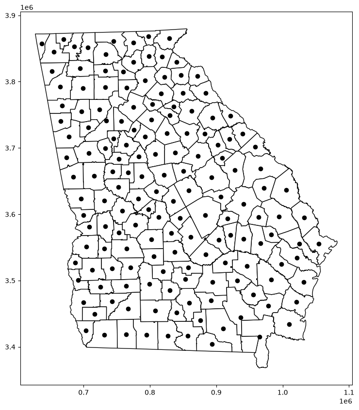
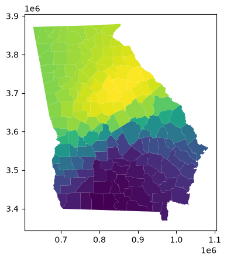
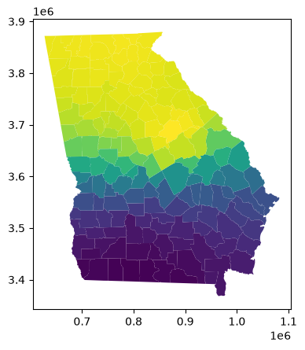
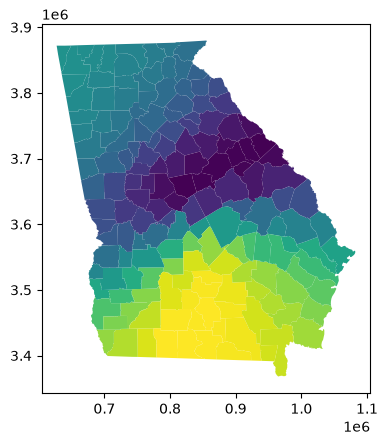
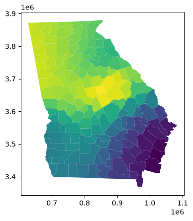
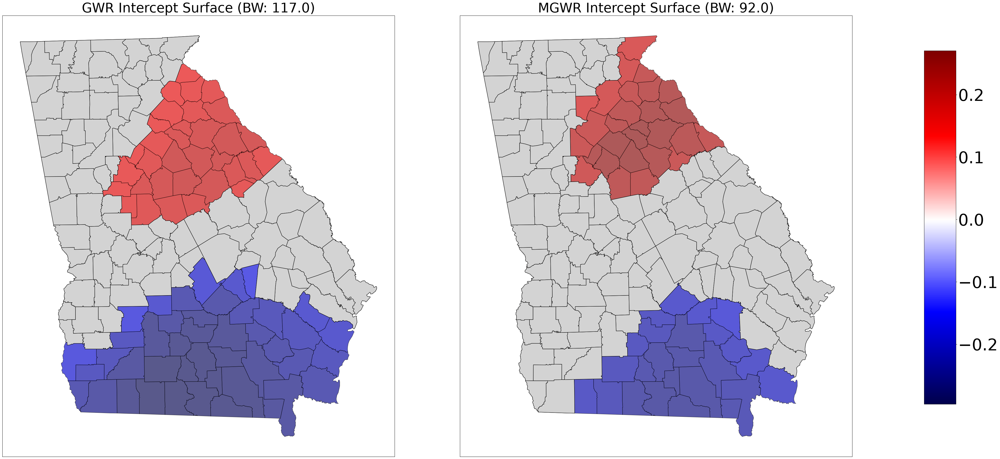
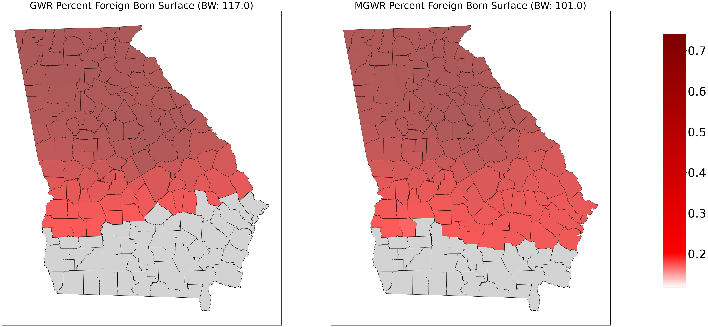
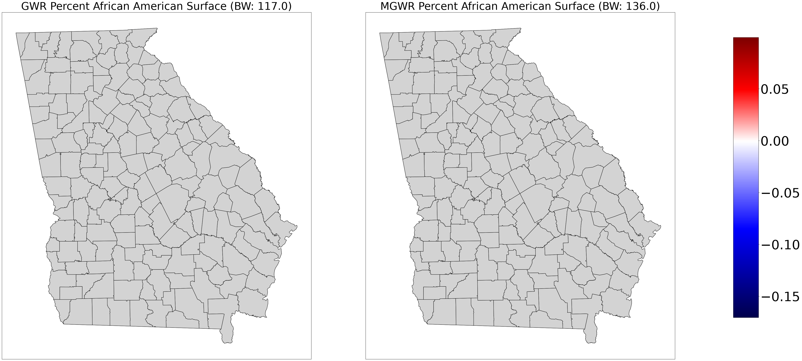
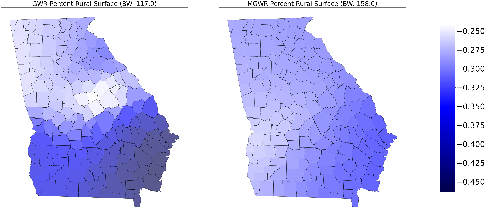

Créditos: El contenido de este cuaderno ha sido tomado de varias fuentes, pero especialmente de Dani Arribas-Bel - University of Liverpool & Sergio Rey - Center for Geospatial Sciences, University of California, Riverside. El compilador se disculpa por cualquier omisión involuntaria y estaría encantado de agregar un reconocimiento.
Regresión Ponderada Geográficamente (GWR)#
Los Modelos de Regresión Espacial Ponderados (GWR, por sus siglas en inglés) constituyen una herramienta estadística avanzada desarrollada para analizar la heterogeneidad espacial de relaciones entre una variable respuesta y un conjunto de variables predictoras en un contexto geográfico (Brunsdon 1996, Fotheringham 2000, Fotheringham 2009). A diferencia de los modelos de regresión tradicional, que asumen que la relación entre las variables es constante en todo el espacio de estudio, los modelos GWR permiten que los coeficientes varíen de manera local. Esto se logra ajustando un modelo de regresión independiente en cada ubicación geográfica, utilizando datos cercanos para ponderar las estimaciones (Brunsdon 1996). Esta metodología es particularmente valiosa para el análisis de susceptibilidad a movimientos en masa, ya que permite representar cómo las diferentes condiciones del terreno afectan la susceptibilidad de manera no uniforme a lo largo de un área.
La formulación matemática de un modelo de regresión espacial ponderada es de la siguiente forma (Brunsdon 1996):
donde: ( y_i ) es el valor de la variable respuesta en la ubicación ( i ), ( (u_i, v_i) ) las coordenadas geográficas de la ubicación ( i ), ( \beta_0(u_i, v_i) ) el término independiente local en la ubicación ( i ), ( \beta_k(u_i, v_i) ) el coeficiente local asociado con la variable predictora ( x_{ik} ) en la ubicación ( i ). ( x_{ik} ) es el valor de la variable predictora ( k ) para la ubicación ( i ), y ( \epsilon_i ) el término de error en la ubicación ( i ).
Los modelos GWR son útiles en situaciones donde la influencia de las variables predictoras cambia espacialmente (Fotheringham 2009), es decir. En estudios de movimientos en masa, estas relaciones pueden depender de la topografía local, las características del suelo, la vegetación, o incluso de los patrones de precipitación que varían en el espacio. Por ejemplo, la influencia de la pendiente o la cobertura vegetal sobre la susceptibilidad a movimientos en masa puede ser distinta en regiones con diferentes características geológicas o climáticas. La aplicación de GWR permite capturar esta variabilidad y proporciona un análisis más detallado y específico para cada localidad del área de estudio.
El aspecto clave de la GWR es que los coeficientes varían dependiendo de la ubicación geográfica , lo cual se logra a través del uso de un kernel de ponderación que da más peso a las observaciones cercanas y menos peso a las observaciones lejanas (Fotheringham 2000). En la práctica, este kernel suele ser una función gaussiana o una función adaptativa, que ajusta el peso según la distancia desde el punto central.
Una de las principales ventajas de los modelos GWR es la facilidad con la que los resultados de GWR pueden ser interpretados y visualizados en un contexto espacial, facilitando la identificación de patrones locales de susceptibilidad y ayudando a la toma de decisiones. Los mapas de coeficientes permiten identificar áreas donde ciertas variables tienen una mayor o menor influencia, aportando información útil para el manejo territorial y la planificación.
Sin embargo, los modelos GWR también presentan limitaciones importantes. Una de ellas es la multicolinealidad local, ya que, debido a la naturaleza local de las regresiones, es posible que en algunas áreas las variables predictoras estén altamente correlacionadas, lo que dificulta la interpretación de los coeficientes (Fotheringham 2000, Brunsdon 1996). Además, los modelos GWR suelen ser computacionalmente más exigentes que los modelos de regresión globales o clásicos, especialmente cuando se trabaja con grandes volúmenes de datos espaciales.
Otra limitación a destacar es la selección del ancho de banda (BW) del kernel de ponderación (Guo 2008). El BW determina cuántas observaciones se consideran en el cálculo de los coeficientes locales, y su elección tiene un impacto en los resultados del modelo. Un BW demasiado amplio puede resultar en un modelo más similar a una regresión global, mientras que un BW muy estrecho puede llevar a resultados sobre-ajustados y poco generalizables. La selección adecuada del BW suele requerir un proceso iterativo y cuidadoso.
Objetivos de aprendizaje#
Al finalizar este notebook, el estudiante será capaz de:
Comprender el principio de no-estacionariedad espacial: coeficientes que varían en el espacio.
Ajustar un modelo GWR (Geographically Weighted Regression) con
mgwry seleccionar el ancho de banda óptimo.Extender el GWR al MGWR (Multiscale GWR), donde cada predictor tiene su propia escala espacial.
Mapear e interpretar los coeficientes localmente variables de cada covariable.
Identificar las escalas espaciales de cada predictor y relacionarlas con procesos geomorfológicos.
Requisitos previos: 09_SpatialRegression — regresión espacial OLS; 07_MatrizCorrelacion — autocorrelación espacial.
Marco teórico ampliado#
Del modelo global al local: limitaciones del OLS#
El modelo OLS asume estacionariedad espacial: los coeficientes \(\beta_k\) son constantes en todo el territorio de estudio:
La heterogeneidad espacial ocurre cuando la fuerza o la dirección de las relaciones varía de una localización a otra (Fotheringham et al., 2002). Un modelo global promedia estas variaciones y puede enmascarar patrones localmente importantes: por ejemplo, el efecto de la pendiente sobre los deslizamientos puede ser muy distinto en zonas con suelos cohesivos respecto de zonas con roca dura.
Señal diagnóstica clave: si los residuos del OLS presentan autocorrelación espacial significativa (I de Moran > 0), el modelo está mal especificado y la transición a GWR está justificada. El GWR transforma la dependencia espacial de un problema estadístico en el objeto central del análisis, operacionalizando directamente la Primera Ley de Tobler: “todo está relacionado con todo, pero las cosas cercanas están más relacionadas que las lejanas”.
Estimador GWR: mínimos cuadrados ponderados locales#
Para cada punto de regresión \(i\), GWR estima un modelo propio ponderando las observaciones por proximidad. La forma matricial del estimador es:
donde \(\mathbf{W}(i)\) es una matriz diagonal cuyos elementos \(w_{ij}\) son los pesos de cada observación \(j\) basados en su distancia a la localización \(i\). El proceso se repite para cada punto del área de estudio, produciendo una superficie de coeficientes — no valores únicos — que puede mapearse e interpretarse espacialmente.
Funciones kernel y selección del ancho de banda#
Funciones kernel disponibles en mgwr#
Kernel |
Comportamiento |
Cuándo usar |
|---|---|---|
Gaussiano |
Decaimiento suave y continuo; toda observación recibe algún peso |
Procesos con influencia gradual entre localidades |
Bisquare |
Pesos = 0 fuera del radio BW; vecindad con corte abrupto |
Cuando se desea un vecindario bien delimitado |
Balance sesgo–varianza del ancho de banda (bandwidth, BW)#
BW pequeño |
BW grande |
|---|---|
Captura variaciones locales finas |
Estimaciones más estables y suaves |
Alta varianza, riesgo de sobreajuste |
Alto sesgo |
Sensible al ruido local |
Cuando BW → ∞, GWR converge al OLS global |
Selección óptima automática: se minimiza el AICc (Corrected Akaike Information Criterion), que premia la bondad de ajuste mientras penaliza la complejidad del modelo.
Kernel fijo vs. adaptativo#
Tipo |
Definición del BW |
|
Cuándo usar |
|---|---|---|---|
Fijo |
Radio de búsqueda constante (ej. 50 000 m) |
|
Datos distribuidos uniformemente en el espacio |
Adaptativo |
\(k\) vecinos más cercanos; radio variable por punto |
|
Datos con distribución espacial irregular |
Para datos geomorfológicos con distribución irregular — cuencas de diferente tamaño, inventarios de deslizamientos concentrados en valles — el kernel adaptativo es más robusto: garantiza que cada regresión local se calibre con una cantidad consistente de información, evitando estimaciones inestables en regiones con escasos datos.
import libpysal as ps
import numpy
import pandas as pd
import geopandas as gpd
import matplotlib.pyplot as plt
import seaborn
import numpy as np
El conjunto de datos de Georgia consta de 159 condados en el estado de Georgia, y registra características sociodemográficas del censo de EE. UU. de 1990.
georgia_data = pd.read_csv(ps.examples.get_path('GData_utm.csv'))
georgia_shp = gpd.read_file(ps.examples.get_path('G_utm.shp'))
fig, ax = plt.subplots(figsize=(10,10))
georgia_shp.plot(ax=ax, **{'edgecolor':'black', 'facecolor':'white'})
georgia_shp.centroid.plot(ax=ax, c='black')
<Axes: >

georgia_shp.head(2)
| AREA | PERIMETER | G_UTM_ | G_UTM_ID | Latitude | Longitud | TotPop90 | PctRural | PctBach | PctEld | PctFB | PctPov | PctBlack | X | Y | AreaKey | geometry | |
|---|---|---|---|---|---|---|---|---|---|---|---|---|---|---|---|---|---|
| 0 | 1.331370e+09 | 207205.0 | 132 | 133 | 31.75339 | -82.28558 | 15744 | 75.6 | 8.2 | 11.43 | 0.64 | 19.9 | 20.76 | 941396.6 | 3521764 | 13001 | POLYGON ((931869.062 3545540.5, 934111.625 354... |
| 1 | 8.929300e+08 | 154640.0 | 157 | 158 | 31.29486 | -82.87474 | 6213 | 100.0 | 6.4 | 11.77 | 1.58 | 26.0 | 26.86 | 895553.0 | 3471916 | 13003 | POLYGON ((867016.312 3482416, 884309.375 34826... |
georgia_shp.info()
<class 'geopandas.geodataframe.GeoDataFrame'>
RangeIndex: 159 entries, 0 to 158
Data columns (total 17 columns):
# Column Non-Null Count Dtype
--- ------ -------------- -----
0 AREA 159 non-null float64
1 PERIMETER 159 non-null float64
2 G_UTM_ 159 non-null int32
3 G_UTM_ID 159 non-null int32
4 Latitude 159 non-null float64
5 Longitud 159 non-null float64
6 TotPop90 159 non-null int32
7 PctRural 159 non-null float64
8 PctBach 159 non-null float64
9 PctEld 159 non-null float64
10 PctFB 159 non-null float64
11 PctPov 159 non-null float64
12 PctBlack 159 non-null float64
13 X 159 non-null float64
14 Y 159 non-null int32
15 AreaKey 159 non-null int32
16 geometry 159 non-null geometry
dtypes: float64(11), geometry(1), int32(5)
memory usage: 18.1 KB
#Prepare Georgia dataset inputs
g_y = georgia_data['PctBach'].values.reshape((-1,1))
g_X = georgia_data[['PctFB', 'PctBlack', 'PctRural']].values
u = georgia_data['X']
v = georgia_data['Y']
g_coords = list(zip(u,v))
# estandarizar datos
g_X = (g_X - g_X.mean(axis=0)) / g_X.std(axis=0)
g_y = g_y.reshape((-1,1))
g_y = (g_y - g_y.mean(axis=0)) / g_y.std(axis=0)
#Calibrate GWR model
from mgwr.gwr import GWR, MGWR
from mgwr.sel_bw import Sel_BW
gwr_selector = Sel_BW(g_coords, g_y, g_X)
gwr_bw = gwr_selector.search(bw_min=2)
print(gwr_bw)
117.0
gwr_results = GWR(g_coords, g_y, g_X, gwr_bw).fit()
np.shape(gwr_results.params)
(159, 4)
gwr_results.params[0:5]
array([[-0.23204579, 0.22820815, 0.05697445, -0.42649461],
[-0.2792238 , 0.16511734, 0.09516542, -0.41226348],
[-0.248944 , 0.20466991, 0.07121197, -0.42573638],
[-0.23036768, 0.1527493 , 0.0510379 , -0.35938659],
[ 0.19066196, 0.71627541, -0.16920186, -0.24091753]])
gwr_results.localR2[0:10]
array([[0.55932878],
[0.5148705 ],
[0.54751792],
[0.50691577],
[0.69062134],
[0.69429812],
[0.69813709],
[0.70867337],
[0.49985703],
[0.49379842]])
np.float = np.float64
gwr_results.summary()
===========================================================================
Model type Gaussian
Number of observations: 159
Number of covariates: 4
Global Regression Results
---------------------------------------------------------------------------
Residual sum of squares: 71.793
Log-likelihood: -162.399
AIC: 332.798
AICc: 335.191
BIC: -713.887
R2: 0.548
Adj. R2: 0.540
Variable Est. SE t(Est/SE) p-value
------------------------------- ---------- ---------- ---------- ----------
X0 0.000 0.054 0.000 1.000
X1 0.458 0.066 6.988 0.000
X2 -0.084 0.055 -1.525 0.127
X3 -0.374 0.065 -5.734 0.000
Geographically Weighted Regression (GWR) Results
---------------------------------------------------------------------------
Spatial kernel: Adaptive bisquare
Bandwidth used: 117.000
Diagnostic information
---------------------------------------------------------------------------
Residual sum of squares: 51.186
Effective number of parameters (trace(S)): 11.805
Degree of freedom (n - trace(S)): 147.195
Sigma estimate: 0.590
Log-likelihood: -135.503
AIC: 296.616
AICc: 299.051
BIC: 335.913
R2: 0.678
Adjusted R2: 0.652
Adj. alpha (95%): 0.017
Adj. critical t value (95%): 2.414
Summary Statistics For GWR Parameter Estimates
---------------------------------------------------------------------------
Variable Mean STD Min Median Max
-------------------- ---------- ---------- ---------- ---------- ----------
X0 -0.004 0.180 -0.296 0.111 0.208
X1 0.477 0.234 0.123 0.556 0.741
X2 -0.043 0.083 -0.170 -0.053 0.100
X3 -0.328 0.060 -0.464 -0.308 -0.241
===========================================================================
#Prepare GWR results for mapping
#Add GWR parameters to GeoDataframe
georgia_shp['gwr_intercept'] = gwr_results.params[:,0]
georgia_shp['gwr_fb'] = gwr_results.params[:,1]
georgia_shp['gwr_aa'] = gwr_results.params[:,2]
georgia_shp['gwr_rural'] = gwr_results.params[:,3]
#Obtain t-vals filtered based on multiple testing correction
gwr_filtered_t = gwr_results.filter_tvals()
georgia_shp.plot(column='gwr_intercept')
<Axes: >

georgia_shp.plot(column='gwr_fb')
<Axes: >

georgia_shp.plot(column='gwr_aa')
<Axes: >

georgia_shp.plot(column='gwr_rural')
<Axes: >

Regresión Ponderada Geográficamente Multiescala (MGWR)#
#Calibrate MGWR model
mgwr_selector = Sel_BW(g_coords, g_y, g_X, multi=True)
mgwr_bw = mgwr_selector.search(multi_bw_min=[2])
mgwr_results = MGWR(g_coords, g_y, g_X, mgwr_selector).fit()
C:\Users\edier\AppData\Roaming\Python\Python314\site-packages\tqdm\auto.py:21: TqdmWarning: IProgress not found. Please update jupyter and ipywidgets. See https://ipywidgets.readthedocs.io/en/stable/user_install.html
from .autonotebook import tqdm as notebook_tqdm
Backfitting: 0%| | 0/200 [00:00<?, ?it/s]
Backfitting: 0%| | 1/200 [00:01<04:41, 1.41s/it]
Backfitting: 1%| | 2/200 [00:02<04:41, 1.42s/it]
Backfitting: 2%|▏ | 3/200 [00:04<04:44, 1.44s/it]
Backfitting: 2%|▏ | 4/200 [00:05<04:43, 1.45s/it]
Backfitting: 2%|▎ | 5/200 [00:07<04:44, 1.46s/it]
Backfitting: 3%|▎ | 6/200 [00:08<04:46, 1.48s/it]
Backfitting: 4%|▎ | 7/200 [00:10<04:44, 1.47s/it]
Backfitting: 4%|▍ | 8/200 [00:11<04:45, 1.48s/it]
Backfitting: 4%|▍ | 9/200 [00:13<04:40, 1.47s/it]
Backfitting: 4%|▍ | 9/200 [00:14<05:10, 1.62s/it]
Inference: 0%| | 0/1 [00:00<?, ?it/s]
Inference: 100%|██████████| 1/1 [00:00<00:00, 16513.01it/s]
mgwr_results.summary()
===========================================================================
Model type Gaussian
Number of observations: 159
Number of covariates: 4
Global Regression Results
---------------------------------------------------------------------------
Residual sum of squares: 71.793
Log-likelihood: -162.399
AIC: 332.798
AICc: 335.191
BIC: -713.887
R2: 0.548
Adj. R2: 0.540
Variable Est. SE t(Est/SE) p-value
------------------------------- ---------- ---------- ---------- ----------
X0 0.000 0.054 0.000 1.000
X1 0.458 0.066 6.988 0.000
X2 -0.084 0.055 -1.525 0.127
X3 -0.374 0.065 -5.734 0.000
Multi-Scale Geographically Weighted Regression (MGWR) Results
---------------------------------------------------------------------------
Spatial kernel: Adaptive bisquare
Criterion for optimal bandwidth: AICc
Score of Change (SOC) type: Smoothing f
Termination criterion for MGWR: 1e-05
MGWR bandwidths
---------------------------------------------------------------------------
Variable Bandwidth ENP_j Adj t-val(95%) Adj alpha(95%)
X0 92.000 3.845 2.512 0.013
X1 101.000 3.514 2.479 0.014
X2 136.000 2.258 2.311 0.022
X3 158.000 1.752 2.210 0.029
Diagnostic information
---------------------------------------------------------------------------
Residual sum of squares: 50.899
Effective number of parameters (trace(S)): 11.368
Degree of freedom (n - trace(S)): 147.632
Sigma estimate: 0.587
Log-likelihood: -135.056
AIC: 294.849
AICc: 297.120
BIC: 332.806
R2 0.680
Adjusted R2 0.655
Summary Statistics For MGWR Parameter Estimates
---------------------------------------------------------------------------
Variable Mean STD Min Median Max
-------------------- ---------- ---------- ---------- ---------- ----------
X0 0.017 0.171 -0.260 0.058 0.271
X1 0.479 0.216 0.117 0.500 0.722
X2 -0.069 0.036 -0.146 -0.064 -0.014
X3 -0.304 0.019 -0.347 -0.302 -0.266
===========================================================================
#Prepare MGWR results for mapping
#Add MGWR parameters to GeoDataframe
georgia_shp['mgwr_intercept'] = mgwr_results.params[:,0]
georgia_shp['mgwr_fb'] = mgwr_results.params[:,1]
georgia_shp['mgwr_aa'] = mgwr_results.params[:,2]
georgia_shp['mgwr_rural'] = mgwr_results.params[:,3]
#Obtain t-vals filtered based on multiple testing correction
mgwr_filtered_t = mgwr_results.filter_tvals()
#Comparison maps of GWR vs. MGWR parameter surfaces where the grey units pertain to statistically insignificant parameters
from mgwr.utils import shift_colormap, truncate_colormap
if not hasattr(plt, 'register_cmap'):
plt.register_cmap = lambda name=None, cmap=None, **kw: plt.matplotlib.colormaps.register(cmap, name=name or cmap.name, force=True)
#Prep plot and add axes
fig, axes = plt.subplots(nrows=1, ncols=2, figsize=(45,20))
ax0 = axes[0]
ax0.set_title('GWR Intercept Surface (BW: ' + str(gwr_bw) +')', fontsize=40)
ax1 = axes[1]
ax1.set_title('MGWR Intercept Surface (BW: ' + str(mgwr_bw[0]) +')', fontsize=40)
#Set color map
cmap = plt.cm.seismic
#Find min and max values of the two combined datasets
gwr_min = georgia_shp['gwr_intercept'].min()
gwr_max = georgia_shp['gwr_intercept'].max()
mgwr_min = georgia_shp['mgwr_intercept'].min()
mgwr_max = georgia_shp['mgwr_intercept'].max()
vmin = np.min([gwr_min, mgwr_min])
vmax = np.max([gwr_max, mgwr_max])
#If all values are negative use the negative half of the colormap
if (vmin < 0) & (vmax < 0):
cmap = truncate_colormap(cmap, 0.0, 0.5)
#If all values are positive use the positive half of the colormap
elif (vmin > 0) & (vmax > 0):
cmap = truncate_colormap(cmap, 0.5, 1.0)
#Otherwise, there are positive and negative values so the colormap so zero is the midpoint
else:
cmap = shift_colormap(cmap, start=0.0, midpoint=1 - vmax/(vmax + abs(vmin)), stop=1.)
#Create scalar mappable for colorbar and stretch colormap across range of data values
sm = plt.cm.ScalarMappable(cmap=cmap, norm=plt.Normalize(vmin=vmin, vmax=vmax))
#Plot GWR parameters
georgia_shp.plot('gwr_intercept', cmap=sm.cmap, ax=ax0, vmin=vmin, vmax=vmax, **{'edgecolor':'black', 'alpha':.65})
#If there are insignificnt parameters plot gray polygons over them
if (gwr_filtered_t[:,0] == 0).any():
georgia_shp[gwr_filtered_t[:,0] == 0].plot(color='lightgrey', ax=ax0, **{'edgecolor':'black'})
#Plot MGWR parameters
georgia_shp.plot('mgwr_intercept', cmap=sm.cmap, ax=ax1, vmin=vmin, vmax=vmax, **{'edgecolor':'black', 'alpha':.65})
#If there are insignificnt parameters plot gray polygons over them
if (mgwr_filtered_t[:,0] == 0).any():
georgia_shp[mgwr_filtered_t[:,0] == 0].plot(color='lightgrey', ax=ax1, **{'edgecolor':'black'})
#Set figure options and plot
fig.tight_layout()
fig.subplots_adjust(right=0.9)
cax = fig.add_axes([0.92, 0.14, 0.03, 0.75])
sm._A = []
cbar = fig.colorbar(sm, cax=cax)
cbar.ax.tick_params(labelsize=50)
ax0.get_xaxis().set_visible(False)
ax0.get_yaxis().set_visible(False)
ax1.get_xaxis().set_visible(False)
ax1.get_yaxis().set_visible(False)
plt.show()

fig, axes = plt.subplots(nrows=1, ncols=2, figsize=(45,20))
ax0 = axes[0]
ax0.set_title('GWR Percent Foreign Born Surface (BW: ' + str(gwr_bw) +')', fontsize=40)
ax1 = axes[1]
ax1.set_title('MGWR Percent Foreign Born Surface (BW: ' + str(mgwr_bw[1]) +')', fontsize=40)
cmap = plt.cm.seismic
gwr_min = georgia_shp['gwr_fb'].min()
gwr_max = georgia_shp['gwr_fb'].max()
mgwr_min = georgia_shp['mgwr_fb'].min()
mgwr_max = georgia_shp['mgwr_fb'].max()
vmin = np.min([gwr_min, mgwr_min])
vmax = np.max([gwr_max, mgwr_max])
if (vmin < 0) & (vmax < 0):
cmap = truncate_colormap(cmap, 0.0, 0.5)
elif (vmin > 0) & (vmax > 0):
cmap = truncate_colormap(cmap, 0.5, 1.0)
# Cambiar el nombre del colormap para evitar duplicados
cmap = shift_colormap(cmap, start=0.0, midpoint=1 - vmax/(vmax + abs(vmin)), stop=1., name="shiftedcmap_" + str(np.random.randint(1000)))
sm = plt.cm.ScalarMappable(cmap=cmap, norm=plt.Normalize(vmin=vmin, vmax=vmax))
georgia_shp.plot('gwr_fb', cmap=sm.cmap, ax=ax0, vmin=vmin, vmax=vmax, **{'edgecolor':'black', 'alpha':.65})
if (gwr_filtered_t[:,1] == 0).any():
georgia_shp[gwr_filtered_t[:,1] == 0].plot(color='lightgrey', ax=ax0, **{'edgecolor':'black'})
georgia_shp.plot('mgwr_fb', cmap=sm.cmap, ax=ax1, vmin=vmin, vmax=vmax, **{'edgecolor':'black', 'alpha':.65})
if (mgwr_filtered_t[:,1] == 0).any():
georgia_shp[mgwr_filtered_t[:,1] == 0].plot(color='lightgrey', ax=ax1, **{'edgecolor':'black'})
fig.tight_layout()
fig.subplots_adjust(right=0.9)
cax = fig.add_axes([0.92, 0.14, 0.03, 0.75])
sm._A = []
cbar = fig.colorbar(sm, cax=cax)
cbar.ax.tick_params(labelsize=50)
ax0.get_xaxis().set_visible(False)
ax0.get_yaxis().set_visible(False)
ax1.get_xaxis().set_visible(False)
ax1.get_yaxis().set_visible(False)
plt.show()

# Crear la figura y los ejes
fig, axes = plt.subplots(nrows=1, ncols=2, figsize=(45, 20))
# Títulos para cada gráfico
ax0 = axes[0]
ax0.set_title('GWR Percent African American Surface (BW: ' + str(gwr_bw) + ')', fontsize=40)
ax1 = axes[1]
ax1.set_title('MGWR Percent African American Surface (BW: ' + str(mgwr_bw[2]) + ')', fontsize=40)
# Colormap inicial
cmap = plt.cm.seismic
# Definir valores mínimos y máximos
gwr_min = georgia_shp['gwr_aa'].min()
gwr_max = georgia_shp['gwr_aa'].max()
mgwr_min = georgia_shp['mgwr_aa'].min()
mgwr_max = georgia_shp['mgwr_aa'].max()
vmin = np.min([gwr_min, mgwr_min])
vmax = np.max([gwr_max, mgwr_max])
# Ajustar el colormap basado en los valores
if (vmin < 0) & (vmax < 0):
cmap = truncate_colormap(cmap, 0.0, 0.5)
elif (vmin > 0) & (vmax > 0):
cmap = truncate_colormap(cmap, 0.5, 1.0)
else:
# Cambiar el nombre del colormap para evitar duplicados
cmap = shift_colormap(cmap, start=0.0, midpoint=1 - vmax / (vmax + abs(vmin)), stop=1., name="shiftedcmap_" + str(np.random.randint(1000)))
# Crear el ScalarMappable
sm = plt.cm.ScalarMappable(cmap=cmap, norm=plt.Normalize(vmin=vmin, vmax=vmax))
# Graficar el mapa de GWR
georgia_shp.plot('gwr_aa', cmap=sm.cmap, ax=ax0, vmin=vmin, vmax=vmax, **{'edgecolor': 'black', 'alpha': .65})
if (gwr_filtered_t[:, 2] == 0).any():
georgia_shp[gwr_filtered_t[:, 2] == 0].plot(color='lightgrey', ax=ax0, **{'edgecolor': 'black'})
# Graficar el mapa de MGWR
georgia_shp.plot('mgwr_aa', cmap=sm.cmap, ax=ax1, vmin=vmin, vmax=vmax, **{'edgecolor': 'black', 'alpha': .65})
if (mgwr_filtered_t[:, 2] == 0).any():
georgia_shp[mgwr_filtered_t[:, 2] == 0].plot(color='lightgrey', ax=ax1, **{'edgecolor': 'black'})
# Ajustar el diseño de la figura
fig.tight_layout()
fig.subplots_adjust(right=0.9)
# Añadir la barra de colores
cax = fig.add_axes([0.92, 0.14, 0.03, 0.75])
sm._A = []
cbar = fig.colorbar(sm, cax=cax)
cbar.ax.tick_params(labelsize=50)
# Ocultar ejes
ax0.get_xaxis().set_visible(False)
ax0.get_yaxis().set_visible(False)
ax1.get_xaxis().set_visible(False)
ax1.get_yaxis().set_visible(False)
# Mostrar la figura
plt.show()

# Crear la figura y los ejes
fig, axes = plt.subplots(nrows=1, ncols=2, figsize=(45, 20))
# Títulos para cada gráfico
ax0 = axes[0]
ax0.set_title('GWR Percent Rural Surface (BW: ' + str(gwr_bw) + ')', fontsize=40)
ax1 = axes[1]
ax1.set_title('MGWR Percent Rural Surface (BW: ' + str(mgwr_bw[3]) + ')', fontsize=40)
# Colormap inicial
cmap = plt.cm.seismic
# Definir valores mínimos y máximos
gwr_min = georgia_shp['gwr_rural'].min()
gwr_max = georgia_shp['gwr_rural'].max()
mgwr_min = georgia_shp['mgwr_rural'].min()
mgwr_max = georgia_shp['mgwr_rural'].max()
vmin = np.min([gwr_min, mgwr_min])
vmax = np.max([gwr_max, mgwr_max])
# Ajustar el colormap basado en los valores
if (vmin < 0) & (vmax < 0):
cmap = truncate_colormap(cmap, 0.0, 0.5)
elif (vmin > 0) & (vmax > 0):
cmap = truncate_colormap(cmap, 0.5, 1.0)
else:
# Cambiar el nombre del colormap para evitar duplicados
cmap = shift_colormap(cmap, start=0.0, midpoint=1 - vmax / (vmax + abs(vmin)), stop=1., name="shiftedcmap_" + str(np.random.randint(1000)))
# Crear el ScalarMappable
sm = plt.cm.ScalarMappable(cmap=cmap, norm=plt.Normalize(vmin=vmin, vmax=vmax))
# Graficar el mapa de GWR
georgia_shp.plot('gwr_rural', cmap=sm.cmap, ax=ax0, vmin=vmin, vmax=vmax, **{'edgecolor': 'black', 'alpha': .65})
if (gwr_filtered_t[:, 3] == 0).any():
georgia_shp[gwr_filtered_t[:, 3] == 0].plot(color='lightgrey', ax=ax0, **{'edgecolor': 'black'})
# Graficar el mapa de MGWR
georgia_shp.plot('mgwr_rural', cmap=sm.cmap, ax=ax1, vmin=vmin, vmax=vmax, **{'edgecolor': 'black', 'alpha': .65})
if (mgwr_filtered_t[:, 3] == 0).any():
georgia_shp[mgwr_filtered_t[:, 3] == 0].plot(color='lightgrey', ax=ax1, **{'edgecolor': 'black'})
# Ajustar el diseño de la figura
fig.tight_layout()
fig.subplots_adjust(right=0.9)
# Añadir la barra de colores
cax = fig.add_axes([0.92, 0.14, 0.03, 0.75])
sm._A = []
cbar = fig.colorbar(sm, cax=cax)
cbar.ax.tick_params(labelsize=50)
# Ocultar ejes
ax0.get_xaxis().set_visible(False)
ax0.get_yaxis().set_visible(False)
ax1.get_xaxis().set_visible(False)
ax1.get_yaxis().set_visible(False)
# Mostrar la figura
plt.show()

También es posible probar la significancia estadística de cada superficie de estimaciones de parámetros producidas por GWR a través de métodos de Monte Carlo. La prueba de variabilidad espacial mezcla las observaciones en el espacio, recalibra GWR en los datos aleatorizados manteniendo constante la especificación del modelo, y luego calcula la variabilidad de las estimaciones de parámetros resultantes para cada superficie. Este proceso se repite y el número de veces que la variabilidad de cada superficie de los datos aleatorizados es mayor que la variabilidad de cada superficie original se utiliza para construir pseudo valores p para pruebas de hipótesis. Un pseudo valor-p menor que 0.05 indica que la variabilidad espacial observada de una superficie de coeficientes es significativa al nivel de confianza del 95% (es decir, no aleatoria).
#Visualizing hypothesis tests for significance of parameter~estimates
#Manually set bandwidth to 107 and fit
gwr_model = GWR(g_coords, g_y, g_X, 107)
gwr_results = gwr_model.fit()
#default is 1000 iterations
p_vals_1000 = gwr_results.spatial_variability(gwr_selector)
print(p_vals_1000)
Testing: 0%| | 0/1000 [00:00<?, ?it/s]
Testing: 0%| | 1/1000 [00:00<06:43, 2.47it/s]
Testing: 0%| | 2/1000 [00:00<06:13, 2.67it/s]
Testing: 0%| | 3/1000 [00:01<06:20, 2.62it/s]
Testing: 0%| | 4/1000 [00:01<06:33, 2.53it/s]
Testing: 0%| | 5/1000 [00:01<06:13, 2.67it/s]
Testing: 1%| | 6/1000 [00:02<06:18, 2.63it/s]
Testing: 1%| | 7/1000 [00:02<06:25, 2.58it/s]
Testing: 1%| | 8/1000 [00:03<06:34, 2.51it/s]
Testing: 1%| | 9/1000 [00:03<06:26, 2.56it/s]
Testing: 1%| | 10/1000 [00:03<06:29, 2.54it/s]
Testing: 1%| | 11/1000 [00:04<06:21, 2.59it/s]
Testing: 1%| | 12/1000 [00:04<06:10, 2.67it/s]
Testing: 1%|▏ | 13/1000 [00:04<06:11, 2.65it/s]
Testing: 1%|▏ | 14/1000 [00:05<06:16, 2.62it/s]
Testing: 2%|▏ | 15/1000 [00:05<06:06, 2.69it/s]
Testing: 2%|▏ | 16/1000 [00:06<05:56, 2.76it/s]
Testing: 2%|▏ | 17/1000 [00:06<06:01, 2.72it/s]
Testing: 2%|▏ | 18/1000 [00:06<06:02, 2.71it/s]
Testing: 2%|▏ | 19/1000 [00:07<06:02, 2.70it/s]
Testing: 2%|▏ | 20/1000 [00:07<06:05, 2.68it/s]
Testing: 2%|▏ | 21/1000 [00:07<05:55, 2.75it/s]
Testing: 2%|▏ | 22/1000 [00:08<05:56, 2.74it/s]
Testing: 2%|▏ | 23/1000 [00:08<06:04, 2.68it/s]
Testing: 2%|▏ | 24/1000 [00:09<06:09, 2.64it/s]
Testing: 2%|▎ | 25/1000 [00:09<06:09, 2.64it/s]
Testing: 3%|▎ | 26/1000 [00:09<06:14, 2.60it/s]
Testing: 3%|▎ | 27/1000 [00:10<06:07, 2.65it/s]
Testing: 3%|▎ | 28/1000 [00:10<06:01, 2.69it/s]
Testing: 3%|▎ | 29/1000 [00:10<06:11, 2.62it/s]
Testing: 3%|▎ | 30/1000 [00:11<06:07, 2.64it/s]
Testing: 3%|▎ | 31/1000 [00:11<06:15, 2.58it/s]
Testing: 3%|▎ | 32/1000 [00:12<06:12, 2.60it/s]
Testing: 3%|▎ | 33/1000 [00:12<06:05, 2.64it/s]
Testing: 3%|▎ | 34/1000 [00:12<06:13, 2.59it/s]
Testing: 4%|▎ | 35/1000 [00:13<06:23, 2.51it/s]
Testing: 4%|▎ | 36/1000 [00:13<06:25, 2.50it/s]
Testing: 4%|▎ | 37/1000 [00:14<06:16, 2.56it/s]
Testing: 4%|▍ | 38/1000 [00:14<06:09, 2.60it/s]
Testing: 4%|▍ | 39/1000 [00:14<06:11, 2.58it/s]
Testing: 4%|▍ | 40/1000 [00:15<06:06, 2.62it/s]
Testing: 4%|▍ | 41/1000 [00:15<05:56, 2.69it/s]
Testing: 4%|▍ | 42/1000 [00:15<05:53, 2.71it/s]
Testing: 4%|▍ | 43/1000 [00:16<06:02, 2.64it/s]
Testing: 4%|▍ | 44/1000 [00:16<06:18, 2.53it/s]
Testing: 4%|▍ | 45/1000 [00:17<06:07, 2.60it/s]
Testing: 5%|▍ | 46/1000 [00:17<06:02, 2.63it/s]
Testing: 5%|▍ | 47/1000 [00:17<05:53, 2.70it/s]
Testing: 5%|▍ | 48/1000 [00:18<05:55, 2.68it/s]
Testing: 5%|▍ | 49/1000 [00:18<05:52, 2.70it/s]
Testing: 5%|▌ | 50/1000 [00:18<05:48, 2.72it/s]
Testing: 5%|▌ | 51/1000 [00:19<05:55, 2.67it/s]
Testing: 5%|▌ | 52/1000 [00:19<05:52, 2.69it/s]
Testing: 5%|▌ | 53/1000 [00:20<05:45, 2.74it/s]
Testing: 5%|▌ | 54/1000 [00:20<05:52, 2.69it/s]
Testing: 6%|▌ | 55/1000 [00:20<05:57, 2.65it/s]
Testing: 6%|▌ | 56/1000 [00:21<05:48, 2.71it/s]
Testing: 6%|▌ | 57/1000 [00:21<05:55, 2.65it/s]
Testing: 6%|▌ | 58/1000 [00:21<05:56, 2.64it/s]
Testing: 6%|▌ | 59/1000 [00:22<05:58, 2.63it/s]
Testing: 6%|▌ | 60/1000 [00:22<06:02, 2.59it/s]
Testing: 6%|▌ | 61/1000 [00:23<06:07, 2.56it/s]
Testing: 6%|▌ | 62/1000 [00:23<06:10, 2.53it/s]
Testing: 6%|▋ | 63/1000 [00:23<05:56, 2.63it/s]
Testing: 6%|▋ | 64/1000 [00:24<05:58, 2.61it/s]
Testing: 6%|▋ | 65/1000 [00:24<06:02, 2.58it/s]
Testing: 7%|▋ | 66/1000 [00:25<05:54, 2.64it/s]
Testing: 7%|▋ | 67/1000 [00:25<05:47, 2.68it/s]
Testing: 7%|▋ | 68/1000 [00:25<05:53, 2.64it/s]
Testing: 7%|▋ | 69/1000 [00:26<05:53, 2.63it/s]
Testing: 7%|▋ | 70/1000 [00:26<05:47, 2.68it/s]
Testing: 7%|▋ | 71/1000 [00:26<05:40, 2.73it/s]
Testing: 7%|▋ | 72/1000 [00:27<05:54, 2.62it/s]
Testing: 7%|▋ | 73/1000 [00:27<05:57, 2.60it/s]
Testing: 7%|▋ | 74/1000 [00:28<05:49, 2.65it/s]
Testing: 8%|▊ | 75/1000 [00:28<05:58, 2.58it/s]
Testing: 8%|▊ | 76/1000 [00:28<06:00, 2.56it/s]
Testing: 8%|▊ | 77/1000 [00:29<06:03, 2.54it/s]
Testing: 8%|▊ | 78/1000 [00:29<05:57, 2.58it/s]
Testing: 8%|▊ | 79/1000 [00:30<05:55, 2.59it/s]
Testing: 8%|▊ | 80/1000 [00:30<06:01, 2.54it/s]
Testing: 8%|▊ | 81/1000 [00:30<06:03, 2.53it/s]
Testing: 8%|▊ | 82/1000 [00:31<05:56, 2.58it/s]
Testing: 8%|▊ | 83/1000 [00:31<05:51, 2.61it/s]
Testing: 8%|▊ | 84/1000 [00:31<05:53, 2.59it/s]
Testing: 8%|▊ | 85/1000 [00:32<05:48, 2.63it/s]
Testing: 9%|▊ | 86/1000 [00:32<05:57, 2.56it/s]
Testing: 9%|▊ | 87/1000 [00:33<05:53, 2.58it/s]
Testing: 9%|▉ | 88/1000 [00:33<06:01, 2.52it/s]
Testing: 9%|▉ | 89/1000 [00:33<05:50, 2.60it/s]
Testing: 9%|▉ | 90/1000 [00:34<05:48, 2.61it/s]
Testing: 9%|▉ | 91/1000 [00:34<05:54, 2.57it/s]
Testing: 9%|▉ | 92/1000 [00:35<05:48, 2.61it/s]
Testing: 9%|▉ | 93/1000 [00:35<05:50, 2.59it/s]
Testing: 9%|▉ | 94/1000 [00:35<05:46, 2.62it/s]
Testing: 10%|▉ | 95/1000 [00:36<05:49, 2.59it/s]
Testing: 10%|▉ | 96/1000 [00:36<05:53, 2.56it/s]
Testing: 10%|▉ | 97/1000 [00:37<05:48, 2.59it/s]
Testing: 10%|▉ | 98/1000 [00:37<05:52, 2.56it/s]
Testing: 10%|▉ | 99/1000 [00:37<05:58, 2.51it/s]
Testing: 10%|█ | 100/1000 [00:38<05:51, 2.56it/s]
Testing: 10%|█ | 101/1000 [00:38<05:45, 2.60it/s]
Testing: 10%|█ | 102/1000 [00:38<05:45, 2.60it/s]
Testing: 10%|█ | 103/1000 [00:39<05:44, 2.60it/s]
Testing: 10%|█ | 104/1000 [00:39<05:40, 2.63it/s]
Testing: 10%|█ | 105/1000 [00:40<05:37, 2.66it/s]
Testing: 11%|█ | 106/1000 [00:40<05:44, 2.59it/s]
Testing: 11%|█ | 107/1000 [00:40<05:48, 2.56it/s]
Testing: 11%|█ | 108/1000 [00:41<05:49, 2.56it/s]
Testing: 11%|█ | 109/1000 [00:41<05:39, 2.63it/s]
Testing: 11%|█ | 110/1000 [00:42<05:41, 2.60it/s]
Testing: 11%|█ | 111/1000 [00:42<05:47, 2.56it/s]
Testing: 11%|█ | 112/1000 [00:42<05:35, 2.65it/s]
Testing: 11%|█▏ | 113/1000 [00:43<05:29, 2.69it/s]
Testing: 11%|█▏ | 114/1000 [00:43<05:37, 2.62it/s]
Testing: 12%|█▏ | 115/1000 [00:43<05:40, 2.60it/s]
Testing: 12%|█▏ | 116/1000 [00:44<05:35, 2.64it/s]
Testing: 12%|█▏ | 117/1000 [00:44<05:47, 2.54it/s]
Testing: 12%|█▏ | 118/1000 [00:45<05:50, 2.52it/s]
Testing: 12%|█▏ | 119/1000 [00:45<05:40, 2.59it/s]
Testing: 12%|█▏ | 120/1000 [00:45<05:47, 2.53it/s]
Testing: 12%|█▏ | 121/1000 [00:46<05:40, 2.58it/s]
Testing: 12%|█▏ | 122/1000 [00:46<05:30, 2.66it/s]
Testing: 12%|█▏ | 123/1000 [00:47<05:36, 2.60it/s]
Testing: 12%|█▏ | 124/1000 [00:47<05:23, 2.70it/s]
Testing: 12%|█▎ | 125/1000 [00:47<05:18, 2.74it/s]
Testing: 13%|█▎ | 126/1000 [00:48<05:31, 2.63it/s]
Testing: 13%|█▎ | 127/1000 [00:48<05:37, 2.59it/s]
Testing: 13%|█▎ | 128/1000 [00:48<05:50, 2.49it/s]
Testing: 13%|█▎ | 129/1000 [00:49<05:30, 2.64it/s]
Testing: 13%|█▎ | 130/1000 [00:49<05:33, 2.61it/s]
Testing: 13%|█▎ | 131/1000 [00:50<05:40, 2.55it/s]
Testing: 13%|█▎ | 132/1000 [00:50<05:55, 2.44it/s]
Testing: 13%|█▎ | 133/1000 [00:50<05:44, 2.52it/s]
Testing: 13%|█▎ | 134/1000 [00:51<05:41, 2.53it/s]
Testing: 14%|█▎ | 135/1000 [00:51<05:38, 2.56it/s]
Testing: 14%|█▎ | 136/1000 [00:52<05:24, 2.66it/s]
Testing: 14%|█▎ | 137/1000 [00:52<05:22, 2.67it/s]
Testing: 14%|█▍ | 138/1000 [00:52<05:27, 2.63it/s]
Testing: 14%|█▍ | 139/1000 [00:53<05:24, 2.65it/s]
Testing: 14%|█▍ | 140/1000 [00:53<05:14, 2.73it/s]
Testing: 14%|█▍ | 141/1000 [00:53<05:10, 2.77it/s]
Testing: 14%|█▍ | 142/1000 [00:54<05:15, 2.72it/s]
Testing: 14%|█▍ | 143/1000 [00:54<05:11, 2.76it/s]
Testing: 14%|█▍ | 144/1000 [00:55<05:24, 2.64it/s]
Testing: 14%|█▍ | 145/1000 [00:55<05:26, 2.62it/s]
Testing: 15%|█▍ | 146/1000 [00:55<05:17, 2.69it/s]
Testing: 15%|█▍ | 147/1000 [00:56<05:20, 2.67it/s]
Testing: 15%|█▍ | 148/1000 [00:56<05:19, 2.66it/s]
Testing: 15%|█▍ | 149/1000 [00:56<05:24, 2.62it/s]
Testing: 15%|█▌ | 150/1000 [00:57<05:32, 2.55it/s]
Testing: 15%|█▌ | 151/1000 [00:57<05:22, 2.63it/s]
Testing: 15%|█▌ | 152/1000 [00:58<05:35, 2.52it/s]
Testing: 15%|█▌ | 153/1000 [00:58<05:36, 2.52it/s]
Testing: 15%|█▌ | 154/1000 [00:58<05:21, 2.63it/s]
Testing: 16%|█▌ | 155/1000 [00:59<05:21, 2.63it/s]
Testing: 16%|█▌ | 156/1000 [00:59<05:18, 2.65it/s]
Testing: 16%|█▌ | 157/1000 [00:59<05:21, 2.62it/s]
Testing: 16%|█▌ | 158/1000 [01:00<05:27, 2.57it/s]
Testing: 16%|█▌ | 159/1000 [01:00<05:25, 2.58it/s]
Testing: 16%|█▌ | 160/1000 [01:01<05:32, 2.53it/s]
Testing: 16%|█▌ | 161/1000 [01:01<05:26, 2.57it/s]
Testing: 16%|█▌ | 162/1000 [01:01<05:18, 2.63it/s]
Testing: 16%|█▋ | 163/1000 [01:02<05:07, 2.72it/s]
Testing: 16%|█▋ | 164/1000 [01:02<05:10, 2.69it/s]
Testing: 16%|█▋ | 165/1000 [01:03<05:08, 2.71it/s]
Testing: 17%|█▋ | 166/1000 [01:03<05:14, 2.65it/s]
Testing: 17%|█▋ | 167/1000 [01:03<05:23, 2.58it/s]
Testing: 17%|█▋ | 168/1000 [01:04<05:21, 2.59it/s]
Testing: 17%|█▋ | 169/1000 [01:04<05:17, 2.61it/s]
Testing: 17%|█▋ | 170/1000 [01:04<05:12, 2.66it/s]
Testing: 17%|█▋ | 171/1000 [01:05<05:16, 2.62it/s]
Testing: 17%|█▋ | 172/1000 [01:05<05:18, 2.60it/s]
Testing: 17%|█▋ | 173/1000 [01:06<05:30, 2.51it/s]
Testing: 17%|█▋ | 174/1000 [01:06<05:34, 2.47it/s]
Testing: 18%|█▊ | 175/1000 [01:06<05:31, 2.49it/s]
Testing: 18%|█▊ | 176/1000 [01:07<05:30, 2.49it/s]
Testing: 18%|█▊ | 177/1000 [01:07<05:27, 2.51it/s]
Testing: 18%|█▊ | 178/1000 [01:08<05:26, 2.52it/s]
Testing: 18%|█▊ | 179/1000 [01:08<05:17, 2.58it/s]
Testing: 18%|█▊ | 180/1000 [01:08<05:20, 2.56it/s]
Testing: 18%|█▊ | 181/1000 [01:09<05:12, 2.62it/s]
Testing: 18%|█▊ | 182/1000 [01:09<05:19, 2.56it/s]
Testing: 18%|█▊ | 183/1000 [01:10<05:20, 2.55it/s]
Testing: 18%|█▊ | 184/1000 [01:10<05:15, 2.59it/s]
Testing: 18%|█▊ | 185/1000 [01:10<05:27, 2.49it/s]
Testing: 19%|█▊ | 186/1000 [01:11<05:18, 2.55it/s]
Testing: 19%|█▊ | 187/1000 [01:11<05:16, 2.57it/s]
Testing: 19%|█▉ | 188/1000 [01:12<05:20, 2.53it/s]
Testing: 19%|█▉ | 189/1000 [01:12<05:21, 2.52it/s]
Testing: 19%|█▉ | 190/1000 [01:12<05:15, 2.57it/s]
Testing: 19%|█▉ | 191/1000 [01:13<05:10, 2.60it/s]
Testing: 19%|█▉ | 192/1000 [01:13<05:25, 2.48it/s]
Testing: 19%|█▉ | 193/1000 [01:13<05:13, 2.58it/s]
Testing: 19%|█▉ | 194/1000 [01:14<05:11, 2.59it/s]
Testing: 20%|█▉ | 195/1000 [01:14<05:13, 2.57it/s]
Testing: 20%|█▉ | 196/1000 [01:15<05:10, 2.59it/s]
Testing: 20%|█▉ | 197/1000 [01:15<05:27, 2.45it/s]
Testing: 20%|█▉ | 198/1000 [01:16<05:45, 2.32it/s]
Testing: 20%|█▉ | 199/1000 [01:16<05:58, 2.24it/s]
Testing: 20%|██ | 200/1000 [01:17<06:06, 2.18it/s]
Testing: 20%|██ | 201/1000 [01:17<06:13, 2.14it/s]
Testing: 20%|██ | 202/1000 [01:18<06:16, 2.12it/s]
Testing: 20%|██ | 203/1000 [01:18<06:19, 2.10it/s]
Testing: 20%|██ | 204/1000 [01:18<06:12, 2.14it/s]
Testing: 20%|██ | 205/1000 [01:19<06:07, 2.17it/s]
Testing: 21%|██ | 206/1000 [01:19<06:13, 2.13it/s]
Testing: 21%|██ | 207/1000 [01:20<06:05, 2.17it/s]
Testing: 21%|██ | 208/1000 [01:20<06:00, 2.19it/s]
Testing: 21%|██ | 209/1000 [01:21<06:07, 2.15it/s]
Testing: 21%|██ | 210/1000 [01:21<06:01, 2.18it/s]
Testing: 21%|██ | 211/1000 [01:22<05:57, 2.21it/s]
Testing: 21%|██ | 212/1000 [01:22<06:05, 2.16it/s]
Testing: 21%|██▏ | 213/1000 [01:23<06:11, 2.12it/s]
Testing: 21%|██▏ | 214/1000 [01:23<06:05, 2.15it/s]
Testing: 22%|██▏ | 215/1000 [01:24<05:59, 2.19it/s]
Testing: 22%|██▏ | 216/1000 [01:24<05:57, 2.19it/s]
Testing: 22%|██▏ | 217/1000 [01:24<05:55, 2.20it/s]
Testing: 22%|██▏ | 218/1000 [01:25<05:54, 2.20it/s]
Testing: 22%|██▏ | 219/1000 [01:25<06:04, 2.14it/s]
Testing: 22%|██▏ | 220/1000 [01:26<06:00, 2.16it/s]
Testing: 22%|██▏ | 221/1000 [01:26<06:11, 2.10it/s]
Testing: 22%|██▏ | 222/1000 [01:27<06:09, 2.11it/s]
Testing: 22%|██▏ | 223/1000 [01:27<06:14, 2.08it/s]
Testing: 22%|██▏ | 224/1000 [01:28<06:05, 2.12it/s]
Testing: 22%|██▎ | 225/1000 [01:28<06:03, 2.13it/s]
Testing: 23%|██▎ | 226/1000 [01:29<05:56, 2.17it/s]
Testing: 23%|██▎ | 227/1000 [01:29<05:52, 2.19it/s]
Testing: 23%|██▎ | 228/1000 [01:30<05:59, 2.15it/s]
Testing: 23%|██▎ | 229/1000 [01:30<06:07, 2.10it/s]
Testing: 23%|██▎ | 230/1000 [01:31<06:08, 2.09it/s]
Testing: 23%|██▎ | 231/1000 [01:31<06:09, 2.08it/s]
Testing: 23%|██▎ | 232/1000 [01:32<06:13, 2.06it/s]
Testing: 23%|██▎ | 233/1000 [01:32<06:02, 2.12it/s]
Testing: 23%|██▎ | 234/1000 [01:32<06:04, 2.10it/s]
Testing: 24%|██▎ | 235/1000 [01:33<06:05, 2.09it/s]
Testing: 24%|██▎ | 236/1000 [01:33<05:56, 2.14it/s]
Testing: 24%|██▎ | 237/1000 [01:34<05:49, 2.18it/s]
Testing: 24%|██▍ | 238/1000 [01:34<05:48, 2.19it/s]
Testing: 24%|██▍ | 239/1000 [01:35<05:46, 2.19it/s]
Testing: 24%|██▍ | 240/1000 [01:35<05:56, 2.13it/s]
Testing: 24%|██▍ | 241/1000 [01:36<05:50, 2.17it/s]
Testing: 24%|██▍ | 242/1000 [01:36<05:53, 2.14it/s]
Testing: 24%|██▍ | 243/1000 [01:37<05:47, 2.18it/s]
Testing: 24%|██▍ | 244/1000 [01:37<05:52, 2.14it/s]
Testing: 24%|██▍ | 245/1000 [01:38<06:26, 1.95it/s]
Testing: 25%|██▍ | 246/1000 [01:38<06:09, 2.04it/s]
Testing: 25%|██▍ | 247/1000 [01:39<06:06, 2.05it/s]
Testing: 25%|██▍ | 248/1000 [01:39<05:56, 2.11it/s]
Testing: 25%|██▍ | 249/1000 [01:40<06:14, 2.00it/s]
Testing: 25%|██▌ | 250/1000 [01:40<06:01, 2.07it/s]
Testing: 25%|██▌ | 251/1000 [01:41<06:07, 2.04it/s]
Testing: 25%|██▌ | 252/1000 [01:41<05:55, 2.10it/s]
Testing: 25%|██▌ | 253/1000 [01:42<05:58, 2.09it/s]
Testing: 25%|██▌ | 254/1000 [01:42<05:59, 2.08it/s]
Testing: 26%|██▌ | 255/1000 [01:42<05:50, 2.13it/s]
Testing: 26%|██▌ | 256/1000 [01:43<05:43, 2.16it/s]
Testing: 26%|██▌ | 257/1000 [01:43<05:41, 2.18it/s]
Testing: 26%|██▌ | 258/1000 [01:44<05:47, 2.14it/s]
Testing: 26%|██▌ | 259/1000 [01:44<05:42, 2.17it/s]
Testing: 26%|██▌ | 260/1000 [01:45<05:52, 2.10it/s]
Testing: 26%|██▌ | 261/1000 [01:45<05:54, 2.08it/s]
Testing: 26%|██▌ | 262/1000 [01:46<05:46, 2.13it/s]
Testing: 26%|██▋ | 263/1000 [01:46<05:42, 2.15it/s]
Testing: 26%|██▋ | 264/1000 [01:47<05:37, 2.18it/s]
Testing: 26%|██▋ | 265/1000 [01:47<05:32, 2.21it/s]
Testing: 27%|██▋ | 266/1000 [01:48<05:40, 2.16it/s]
Testing: 27%|██▋ | 267/1000 [01:48<05:35, 2.18it/s]
Testing: 27%|██▋ | 268/1000 [01:48<05:32, 2.20it/s]
Testing: 27%|██▋ | 269/1000 [01:49<05:29, 2.22it/s]
Testing: 27%|██▋ | 270/1000 [01:49<05:37, 2.16it/s]
Testing: 27%|██▋ | 271/1000 [01:50<05:32, 2.19it/s]
Testing: 27%|██▋ | 272/1000 [01:50<05:28, 2.22it/s]
Testing: 27%|██▋ | 273/1000 [01:51<05:38, 2.15it/s]
Testing: 27%|██▋ | 274/1000 [01:51<05:42, 2.12it/s]
Testing: 28%|██▊ | 275/1000 [01:52<05:53, 2.05it/s]
Testing: 28%|██▊ | 276/1000 [01:52<05:43, 2.11it/s]
Testing: 28%|██▊ | 277/1000 [01:53<05:38, 2.14it/s]
Testing: 28%|██▊ | 278/1000 [01:53<05:33, 2.17it/s]
Testing: 28%|██▊ | 279/1000 [01:54<05:40, 2.12it/s]
Testing: 28%|██▊ | 280/1000 [01:54<05:46, 2.08it/s]
Testing: 28%|██▊ | 281/1000 [01:55<05:37, 2.13it/s]
Testing: 28%|██▊ | 282/1000 [01:55<05:34, 2.15it/s]
Testing: 28%|██▊ | 283/1000 [01:55<05:31, 2.16it/s]
Testing: 28%|██▊ | 284/1000 [01:56<05:27, 2.18it/s]
Testing: 28%|██▊ | 285/1000 [01:56<05:24, 2.21it/s]
Testing: 29%|██▊ | 286/1000 [01:57<05:23, 2.21it/s]
Testing: 29%|██▊ | 287/1000 [01:57<05:30, 2.15it/s]
Testing: 29%|██▉ | 288/1000 [01:58<05:40, 2.09it/s]
Testing: 29%|██▉ | 289/1000 [01:58<05:34, 2.13it/s]
Testing: 29%|██▉ | 290/1000 [01:59<05:29, 2.16it/s]
Testing: 29%|██▉ | 291/1000 [01:59<05:24, 2.18it/s]
Testing: 29%|██▉ | 292/1000 [02:00<05:22, 2.19it/s]
Testing: 29%|██▉ | 293/1000 [02:00<05:26, 2.16it/s]
Testing: 29%|██▉ | 294/1000 [02:01<05:31, 2.13it/s]
Testing: 30%|██▉ | 295/1000 [02:01<05:34, 2.11it/s]
Testing: 30%|██▉ | 296/1000 [02:02<05:41, 2.06it/s]
Testing: 30%|██▉ | 297/1000 [02:02<05:41, 2.06it/s]
Testing: 30%|██▉ | 298/1000 [02:03<05:46, 2.03it/s]
Testing: 30%|██▉ | 299/1000 [02:03<05:51, 2.00it/s]
Testing: 30%|███ | 300/1000 [02:04<05:55, 1.97it/s]
Testing: 30%|███ | 301/1000 [02:04<05:42, 2.04it/s]
Testing: 30%|███ | 302/1000 [02:05<05:48, 2.00it/s]
Testing: 30%|███ | 303/1000 [02:05<05:36, 2.07it/s]
Testing: 30%|███ | 304/1000 [02:05<05:27, 2.12it/s]
Testing: 30%|███ | 305/1000 [02:06<05:31, 2.10it/s]
Testing: 31%|███ | 306/1000 [02:06<05:23, 2.14it/s]
Testing: 31%|███ | 307/1000 [02:07<05:27, 2.12it/s]
Testing: 31%|███ | 308/1000 [02:07<05:21, 2.15it/s]
Testing: 31%|███ | 309/1000 [02:08<05:25, 2.12it/s]
Testing: 31%|███ | 310/1000 [02:08<05:28, 2.10it/s]
Testing: 31%|███ | 311/1000 [02:09<05:21, 2.15it/s]
Testing: 31%|███ | 312/1000 [02:09<05:32, 2.07it/s]
Testing: 31%|███▏ | 313/1000 [02:10<05:22, 2.13it/s]
Testing: 31%|███▏ | 314/1000 [02:10<05:16, 2.17it/s]
Testing: 32%|███▏ | 315/1000 [02:11<05:11, 2.20it/s]
Testing: 32%|███▏ | 316/1000 [02:11<05:17, 2.15it/s]
Testing: 32%|███▏ | 317/1000 [02:12<05:21, 2.12it/s]
Testing: 32%|███▏ | 318/1000 [02:12<05:17, 2.15it/s]
Testing: 32%|███▏ | 319/1000 [02:12<05:12, 2.18it/s]
Testing: 32%|███▏ | 320/1000 [02:13<05:11, 2.18it/s]
Testing: 32%|███▏ | 321/1000 [02:13<05:18, 2.14it/s]
Testing: 32%|███▏ | 322/1000 [02:14<05:17, 2.14it/s]
Testing: 32%|███▏ | 323/1000 [02:14<05:22, 2.10it/s]
Testing: 32%|███▏ | 324/1000 [02:15<05:15, 2.15it/s]
Testing: 32%|███▎ | 325/1000 [02:15<05:19, 2.11it/s]
Testing: 33%|███▎ | 326/1000 [02:16<05:13, 2.15it/s]
Testing: 33%|███▎ | 327/1000 [02:16<05:18, 2.11it/s]
Testing: 33%|███▎ | 328/1000 [02:17<05:14, 2.14it/s]
Testing: 33%|███▎ | 329/1000 [02:17<05:18, 2.10it/s]
Testing: 33%|███▎ | 330/1000 [02:18<05:22, 2.08it/s]
Testing: 33%|███▎ | 331/1000 [02:18<05:23, 2.07it/s]
Testing: 33%|███▎ | 332/1000 [02:19<05:52, 1.89it/s]
Testing: 33%|███▎ | 333/1000 [02:19<05:44, 1.94it/s]
Testing: 33%|███▎ | 334/1000 [02:20<05:38, 1.97it/s]
Testing: 34%|███▎ | 335/1000 [02:20<05:50, 1.90it/s]
Testing: 34%|███▎ | 336/1000 [02:21<05:56, 1.86it/s]
Testing: 34%|███▎ | 337/1000 [02:21<05:50, 1.89it/s]
Testing: 34%|███▍ | 338/1000 [02:22<05:53, 1.87it/s]
Testing: 34%|███▍ | 339/1000 [02:22<05:52, 1.87it/s]
Testing: 34%|███▍ | 340/1000 [02:23<05:48, 1.89it/s]
Testing: 34%|███▍ | 341/1000 [02:24<05:47, 1.90it/s]
Testing: 34%|███▍ | 342/1000 [02:24<05:46, 1.90it/s]
Testing: 34%|███▍ | 343/1000 [02:25<06:00, 1.82it/s]
Testing: 34%|███▍ | 344/1000 [02:25<06:15, 1.75it/s]
Testing: 34%|███▍ | 345/1000 [02:26<05:58, 1.83it/s]
Testing: 35%|███▍ | 346/1000 [02:26<05:51, 1.86it/s]
Testing: 35%|███▍ | 347/1000 [02:27<06:07, 1.78it/s]
Testing: 35%|███▍ | 348/1000 [02:27<05:51, 1.86it/s]
Testing: 35%|███▍ | 349/1000 [02:28<05:41, 1.90it/s]
Testing: 35%|███▌ | 350/1000 [02:28<05:50, 1.85it/s]
Testing: 35%|███▌ | 351/1000 [02:29<05:38, 1.92it/s]
Testing: 35%|███▌ | 352/1000 [02:30<05:52, 1.84it/s]
Testing: 35%|███▌ | 353/1000 [02:30<06:03, 1.78it/s]
Testing: 35%|███▌ | 354/1000 [02:31<06:00, 1.79it/s]
Testing: 36%|███▌ | 355/1000 [02:31<06:08, 1.75it/s]
Testing: 36%|███▌ | 356/1000 [02:32<06:04, 1.77it/s]
Testing: 36%|███▌ | 357/1000 [02:32<06:15, 1.71it/s]
Testing: 36%|███▌ | 358/1000 [02:33<06:19, 1.69it/s]
Testing: 36%|███▌ | 359/1000 [02:34<06:07, 1.74it/s]
Testing: 36%|███▌ | 360/1000 [02:34<06:09, 1.73it/s]
Testing: 36%|███▌ | 361/1000 [02:35<06:00, 1.77it/s]
Testing: 36%|███▌ | 362/1000 [02:35<05:59, 1.77it/s]
Testing: 36%|███▋ | 363/1000 [02:36<05:55, 1.79it/s]
Testing: 36%|███▋ | 364/1000 [02:36<06:10, 1.72it/s]
Testing: 36%|███▋ | 365/1000 [02:37<05:57, 1.78it/s]
Testing: 37%|███▋ | 366/1000 [02:38<05:48, 1.82it/s]
Testing: 37%|███▋ | 367/1000 [02:38<05:45, 1.83it/s]
Testing: 37%|███▋ | 368/1000 [02:39<05:49, 1.81it/s]
Testing: 37%|███▋ | 369/1000 [02:39<05:49, 1.80it/s]
Testing: 37%|███▋ | 370/1000 [02:40<05:59, 1.75it/s]
Testing: 37%|███▋ | 371/1000 [02:40<05:52, 1.79it/s]
Testing: 37%|███▋ | 372/1000 [02:41<05:53, 1.78it/s]
Testing: 37%|███▋ | 373/1000 [02:42<06:05, 1.72it/s]
Testing: 37%|███▋ | 374/1000 [02:42<06:13, 1.68it/s]
Testing: 38%|███▊ | 375/1000 [02:43<05:57, 1.75it/s]
Testing: 38%|███▊ | 376/1000 [02:43<05:44, 1.81it/s]
Testing: 38%|███▊ | 377/1000 [02:44<05:55, 1.75it/s]
Testing: 38%|███▊ | 378/1000 [02:44<06:03, 1.71it/s]
Testing: 38%|███▊ | 379/1000 [02:45<05:42, 1.81it/s]
Testing: 38%|███▊ | 380/1000 [02:45<05:44, 1.80it/s]
Testing: 38%|███▊ | 381/1000 [02:46<05:36, 1.84it/s]
Testing: 38%|███▊ | 382/1000 [02:47<05:52, 1.76it/s]
Testing: 38%|███▊ | 383/1000 [02:47<06:01, 1.71it/s]
Testing: 38%|███▊ | 384/1000 [02:48<05:53, 1.74it/s]
Testing: 38%|███▊ | 385/1000 [02:48<05:58, 1.72it/s]
Testing: 39%|███▊ | 386/1000 [02:49<05:56, 1.72it/s]
Testing: 39%|███▊ | 387/1000 [02:50<06:07, 1.67it/s]
Testing: 39%|███▉ | 388/1000 [02:50<06:02, 1.69it/s]
Testing: 39%|███▉ | 389/1000 [02:51<05:56, 1.71it/s]
Testing: 39%|███▉ | 390/1000 [02:51<05:44, 1.77it/s]
Testing: 39%|███▉ | 391/1000 [02:52<05:34, 1.82it/s]
Testing: 39%|███▉ | 392/1000 [02:52<05:18, 1.91it/s]
Testing: 39%|███▉ | 393/1000 [02:53<05:32, 1.82it/s]
Testing: 39%|███▉ | 394/1000 [02:53<05:40, 1.78it/s]
Testing: 40%|███▉ | 395/1000 [02:54<05:54, 1.71it/s]
Testing: 40%|███▉ | 396/1000 [02:55<05:47, 1.74it/s]
Testing: 40%|███▉ | 397/1000 [02:55<05:55, 1.70it/s]
Testing: 40%|███▉ | 398/1000 [02:56<05:41, 1.76it/s]
Testing: 40%|███▉ | 399/1000 [02:56<05:35, 1.79it/s]
Testing: 40%|████ | 400/1000 [02:57<05:29, 1.82it/s]
Testing: 40%|████ | 401/1000 [02:57<05:24, 1.85it/s]
Testing: 40%|████ | 402/1000 [02:58<05:19, 1.87it/s]
Testing: 40%|████ | 403/1000 [02:58<05:15, 1.89it/s]
Testing: 40%|████ | 404/1000 [02:59<05:14, 1.90it/s]
Testing: 40%|████ | 405/1000 [02:59<05:11, 1.91it/s]
Testing: 41%|████ | 406/1000 [03:00<05:17, 1.87it/s]
Testing: 41%|████ | 407/1000 [03:01<05:30, 1.80it/s]
Testing: 41%|████ | 408/1000 [03:01<05:27, 1.81it/s]
Testing: 41%|████ | 409/1000 [03:02<05:37, 1.75it/s]
Testing: 41%|████ | 410/1000 [03:02<05:40, 1.73it/s]
Testing: 41%|████ | 411/1000 [03:03<05:40, 1.73it/s]
Testing: 41%|████ | 412/1000 [03:03<05:41, 1.72it/s]
Testing: 41%|████▏ | 413/1000 [03:04<05:48, 1.68it/s]
Testing: 41%|████▏ | 414/1000 [03:05<05:31, 1.77it/s]
Testing: 42%|████▏ | 415/1000 [03:05<05:21, 1.82it/s]
Testing: 42%|████▏ | 416/1000 [03:06<05:15, 1.85it/s]
Testing: 42%|████▏ | 417/1000 [03:06<05:07, 1.89it/s]
Testing: 42%|████▏ | 418/1000 [03:07<05:09, 1.88it/s]
Testing: 42%|████▏ | 419/1000 [03:07<05:14, 1.85it/s]
Testing: 42%|████▏ | 420/1000 [03:08<05:06, 1.89it/s]
Testing: 42%|████▏ | 421/1000 [03:08<05:00, 1.93it/s]
Testing: 42%|████▏ | 422/1000 [03:09<04:49, 2.00it/s]
Testing: 42%|████▏ | 423/1000 [03:09<04:53, 1.97it/s]
Testing: 42%|████▏ | 424/1000 [03:10<04:42, 2.04it/s]
Testing: 42%|████▎ | 425/1000 [03:10<04:45, 2.01it/s]
Testing: 43%|████▎ | 426/1000 [03:11<04:41, 2.04it/s]
Testing: 43%|████▎ | 427/1000 [03:11<04:35, 2.08it/s]
Testing: 43%|████▎ | 428/1000 [03:12<04:38, 2.05it/s]
Testing: 43%|████▎ | 429/1000 [03:12<04:35, 2.07it/s]
Testing: 43%|████▎ | 430/1000 [03:13<04:55, 1.93it/s]
Testing: 43%|████▎ | 431/1000 [03:13<04:44, 2.00it/s]
Testing: 43%|████▎ | 432/1000 [03:14<04:41, 2.02it/s]
Testing: 43%|████▎ | 433/1000 [03:14<04:43, 2.00it/s]
Testing: 43%|████▎ | 434/1000 [03:15<04:44, 1.99it/s]
Testing: 44%|████▎ | 435/1000 [03:15<04:51, 1.94it/s]
Testing: 44%|████▎ | 436/1000 [03:16<05:15, 1.79it/s]
Testing: 44%|████▎ | 437/1000 [03:16<05:21, 1.75it/s]
Testing: 44%|████▍ | 438/1000 [03:17<05:20, 1.75it/s]
Testing: 44%|████▍ | 439/1000 [03:18<05:07, 1.82it/s]
Testing: 44%|████▍ | 440/1000 [03:18<05:16, 1.77it/s]
Testing: 44%|████▍ | 441/1000 [03:19<05:11, 1.79it/s]
Testing: 44%|████▍ | 442/1000 [03:19<05:05, 1.83it/s]
Testing: 44%|████▍ | 443/1000 [03:20<05:08, 1.80it/s]
Testing: 44%|████▍ | 444/1000 [03:20<05:03, 1.83it/s]
Testing: 44%|████▍ | 445/1000 [03:21<05:00, 1.85it/s]
Testing: 45%|████▍ | 446/1000 [03:21<04:46, 1.94it/s]
Testing: 45%|████▍ | 447/1000 [03:22<04:51, 1.90it/s]
Testing: 45%|████▍ | 448/1000 [03:22<04:47, 1.92it/s]
Testing: 45%|████▍ | 449/1000 [03:23<04:58, 1.85it/s]
Testing: 45%|████▌ | 450/1000 [03:23<04:50, 1.89it/s]
Testing: 45%|████▌ | 451/1000 [03:24<05:00, 1.83it/s]
Testing: 45%|████▌ | 452/1000 [03:25<04:57, 1.84it/s]
Testing: 45%|████▌ | 453/1000 [03:25<05:00, 1.82it/s]
Testing: 45%|████▌ | 454/1000 [03:26<04:47, 1.90it/s]
Testing: 46%|████▌ | 455/1000 [03:26<04:58, 1.82it/s]
Testing: 46%|████▌ | 456/1000 [03:27<04:49, 1.88it/s]
Testing: 46%|████▌ | 457/1000 [03:27<04:46, 1.90it/s]
Testing: 46%|████▌ | 458/1000 [03:28<05:05, 1.78it/s]
Testing: 46%|████▌ | 459/1000 [03:28<04:57, 1.82it/s]
Testing: 46%|████▌ | 460/1000 [03:29<04:44, 1.90it/s]
Testing: 46%|████▌ | 461/1000 [03:29<04:47, 1.87it/s]
Testing: 46%|████▌ | 462/1000 [03:30<04:49, 1.86it/s]
Testing: 46%|████▋ | 463/1000 [03:30<04:46, 1.87it/s]
Testing: 46%|████▋ | 464/1000 [03:31<04:37, 1.93it/s]
Testing: 46%|████▋ | 465/1000 [03:31<04:38, 1.92it/s]
Testing: 47%|████▋ | 466/1000 [03:32<04:42, 1.89it/s]
Testing: 47%|████▋ | 467/1000 [03:33<04:41, 1.89it/s]
Testing: 47%|████▋ | 468/1000 [03:33<04:42, 1.88it/s]
Testing: 47%|████▋ | 469/1000 [03:34<04:39, 1.90it/s]
Testing: 47%|████▋ | 470/1000 [03:34<04:42, 1.88it/s]
Testing: 47%|████▋ | 471/1000 [03:35<04:29, 1.96it/s]
Testing: 47%|████▋ | 472/1000 [03:35<04:29, 1.96it/s]
Testing: 47%|████▋ | 473/1000 [03:36<04:38, 1.89it/s]
Testing: 47%|████▋ | 474/1000 [03:36<04:35, 1.91it/s]
Testing: 48%|████▊ | 475/1000 [03:37<04:22, 2.00it/s]
Testing: 48%|████▊ | 476/1000 [03:37<04:18, 2.03it/s]
Testing: 48%|████▊ | 477/1000 [03:38<04:29, 1.94it/s]
Testing: 48%|████▊ | 478/1000 [03:38<04:20, 2.01it/s]
Testing: 48%|████▊ | 479/1000 [03:39<04:18, 2.01it/s]
Testing: 48%|████▊ | 480/1000 [03:39<04:12, 2.06it/s]
Testing: 48%|████▊ | 481/1000 [03:40<04:27, 1.94it/s]
Testing: 48%|████▊ | 482/1000 [03:40<04:33, 1.89it/s]
Testing: 48%|████▊ | 483/1000 [03:41<04:22, 1.97it/s]
Testing: 48%|████▊ | 484/1000 [03:41<04:16, 2.01it/s]
Testing: 48%|████▊ | 485/1000 [03:42<04:35, 1.87it/s]
Testing: 49%|████▊ | 486/1000 [03:42<04:29, 1.91it/s]
Testing: 49%|████▊ | 487/1000 [03:43<04:28, 1.91it/s]
Testing: 49%|████▉ | 488/1000 [03:43<04:29, 1.90it/s]
Testing: 49%|████▉ | 489/1000 [03:44<04:35, 1.86it/s]
Testing: 49%|████▉ | 490/1000 [03:44<04:34, 1.86it/s]
Testing: 49%|████▉ | 491/1000 [03:45<04:26, 1.91it/s]
Testing: 49%|████▉ | 492/1000 [03:45<04:20, 1.95it/s]
Testing: 49%|████▉ | 493/1000 [03:46<04:22, 1.93it/s]
Testing: 49%|████▉ | 494/1000 [03:46<04:17, 1.97it/s]
Testing: 50%|████▉ | 495/1000 [03:47<04:08, 2.03it/s]
Testing: 50%|████▉ | 496/1000 [03:47<04:16, 1.97it/s]
Testing: 50%|████▉ | 497/1000 [03:48<04:21, 1.92it/s]
Testing: 50%|████▉ | 498/1000 [03:49<04:28, 1.87it/s]
Testing: 50%|████▉ | 499/1000 [03:49<04:28, 1.87it/s]
Testing: 50%|█████ | 500/1000 [03:50<04:29, 1.86it/s]
Testing: 50%|█████ | 501/1000 [03:50<04:30, 1.85it/s]
Testing: 50%|█████ | 502/1000 [03:51<04:28, 1.86it/s]
Testing: 50%|█████ | 503/1000 [03:51<04:40, 1.77it/s]
Testing: 50%|█████ | 504/1000 [03:52<05:00, 1.65it/s]
Testing: 50%|█████ | 505/1000 [03:53<04:37, 1.78it/s]
Testing: 51%|█████ | 506/1000 [03:53<04:39, 1.77it/s]
Testing: 51%|█████ | 507/1000 [03:54<04:39, 1.76it/s]
Testing: 51%|█████ | 508/1000 [03:54<04:20, 1.89it/s]
Testing: 51%|█████ | 509/1000 [03:55<04:21, 1.88it/s]
Testing: 51%|█████ | 510/1000 [03:55<04:13, 1.93it/s]
Testing: 51%|█████ | 511/1000 [03:56<04:08, 1.97it/s]
Testing: 51%|█████ | 512/1000 [03:56<04:04, 2.00it/s]
Testing: 51%|█████▏ | 513/1000 [03:57<03:54, 2.07it/s]
Testing: 51%|█████▏ | 514/1000 [03:57<03:55, 2.06it/s]
Testing: 52%|█████▏ | 515/1000 [03:57<03:48, 2.12it/s]
Testing: 52%|█████▏ | 516/1000 [03:58<03:43, 2.16it/s]
Testing: 52%|█████▏ | 517/1000 [03:58<03:41, 2.18it/s]
Testing: 52%|█████▏ | 518/1000 [03:59<03:38, 2.21it/s]
Testing: 52%|█████▏ | 519/1000 [03:59<03:36, 2.23it/s]
Testing: 52%|█████▏ | 520/1000 [04:00<03:35, 2.22it/s]
Testing: 52%|█████▏ | 521/1000 [04:00<03:33, 2.24it/s]
Testing: 52%|█████▏ | 522/1000 [04:01<03:40, 2.17it/s]
Testing: 52%|█████▏ | 523/1000 [04:01<03:54, 2.03it/s]
Testing: 52%|█████▏ | 524/1000 [04:02<03:51, 2.06it/s]
Testing: 52%|█████▎ | 525/1000 [04:02<03:59, 1.98it/s]
Testing: 53%|█████▎ | 526/1000 [04:03<04:04, 1.94it/s]
Testing: 53%|█████▎ | 527/1000 [04:03<04:16, 1.84it/s]
Testing: 53%|█████▎ | 528/1000 [04:04<04:13, 1.86it/s]
Testing: 53%|█████▎ | 529/1000 [04:04<04:12, 1.86it/s]
Testing: 53%|█████▎ | 530/1000 [04:05<04:13, 1.86it/s]
Testing: 53%|█████▎ | 531/1000 [04:06<04:22, 1.79it/s]
Testing: 53%|█████▎ | 532/1000 [04:06<04:19, 1.80it/s]
Testing: 53%|█████▎ | 533/1000 [04:07<04:08, 1.88it/s]
Testing: 53%|█████▎ | 534/1000 [04:07<03:56, 1.97it/s]
Testing: 54%|█████▎ | 535/1000 [04:08<03:50, 2.02it/s]
Testing: 54%|█████▎ | 536/1000 [04:08<03:48, 2.03it/s]
Testing: 54%|█████▎ | 537/1000 [04:08<03:46, 2.05it/s]
Testing: 54%|█████▍ | 538/1000 [04:09<03:49, 2.01it/s]
Testing: 54%|█████▍ | 539/1000 [04:09<03:48, 2.02it/s]
Testing: 54%|█████▍ | 540/1000 [04:10<03:46, 2.03it/s]
Testing: 54%|█████▍ | 541/1000 [04:10<03:39, 2.09it/s]
Testing: 54%|█████▍ | 542/1000 [04:11<03:35, 2.12it/s]
Testing: 54%|█████▍ | 543/1000 [04:11<03:42, 2.05it/s]
Testing: 54%|█████▍ | 544/1000 [04:12<03:46, 2.01it/s]
Testing: 55%|█████▍ | 545/1000 [04:12<03:51, 1.97it/s]
Testing: 55%|█████▍ | 546/1000 [04:13<03:48, 1.98it/s]
Testing: 55%|█████▍ | 547/1000 [04:13<03:43, 2.03it/s]
Testing: 55%|█████▍ | 548/1000 [04:14<03:42, 2.04it/s]
Testing: 55%|█████▍ | 549/1000 [04:14<03:45, 2.00it/s]
Testing: 55%|█████▌ | 550/1000 [04:15<03:39, 2.05it/s]
Testing: 55%|█████▌ | 551/1000 [04:15<03:40, 2.04it/s]
Testing: 55%|█████▌ | 552/1000 [04:16<03:39, 2.04it/s]
Testing: 55%|█████▌ | 553/1000 [04:16<03:46, 1.97it/s]
Testing: 55%|█████▌ | 554/1000 [04:17<03:51, 1.93it/s]
Testing: 56%|█████▌ | 555/1000 [04:17<03:51, 1.92it/s]
Testing: 56%|█████▌ | 556/1000 [04:18<03:48, 1.94it/s]
Testing: 56%|█████▌ | 557/1000 [04:18<03:44, 1.97it/s]
Testing: 56%|█████▌ | 558/1000 [04:19<03:38, 2.02it/s]
Testing: 56%|█████▌ | 559/1000 [04:19<03:42, 1.98it/s]
Testing: 56%|█████▌ | 560/1000 [04:20<03:36, 2.03it/s]
Testing: 56%|█████▌ | 561/1000 [04:21<03:49, 1.91it/s]
Testing: 56%|█████▌ | 562/1000 [04:21<03:41, 1.97it/s]
Testing: 56%|█████▋ | 563/1000 [04:21<03:36, 2.02it/s]
Testing: 56%|█████▋ | 564/1000 [04:22<03:30, 2.07it/s]
Testing: 56%|█████▋ | 565/1000 [04:22<03:32, 2.05it/s]
Testing: 57%|█████▋ | 566/1000 [04:23<03:30, 2.06it/s]
Testing: 57%|█████▋ | 567/1000 [04:23<03:25, 2.11it/s]
Testing: 57%|█████▋ | 568/1000 [04:24<03:26, 2.09it/s]
Testing: 57%|█████▋ | 569/1000 [04:24<03:30, 2.05it/s]
Testing: 57%|█████▋ | 570/1000 [04:25<03:31, 2.03it/s]
Testing: 57%|█████▋ | 571/1000 [04:25<03:41, 1.94it/s]
Testing: 57%|█████▋ | 572/1000 [04:26<03:31, 2.03it/s]
Testing: 57%|█████▋ | 573/1000 [04:26<03:24, 2.09it/s]
Testing: 57%|█████▋ | 574/1000 [04:27<03:32, 2.00it/s]
Testing: 57%|█████▊ | 575/1000 [04:27<03:36, 1.96it/s]
Testing: 58%|█████▊ | 576/1000 [04:28<03:38, 1.94it/s]
Testing: 58%|█████▊ | 577/1000 [04:28<03:30, 2.01it/s]
Testing: 58%|█████▊ | 578/1000 [04:29<03:23, 2.08it/s]
Testing: 58%|█████▊ | 579/1000 [04:29<03:22, 2.07it/s]
Testing: 58%|█████▊ | 580/1000 [04:30<03:26, 2.04it/s]
Testing: 58%|█████▊ | 581/1000 [04:30<03:30, 1.99it/s]
Testing: 58%|█████▊ | 582/1000 [04:31<03:24, 2.04it/s]
Testing: 58%|█████▊ | 583/1000 [04:31<03:23, 2.05it/s]
Testing: 58%|█████▊ | 584/1000 [04:32<03:18, 2.09it/s]
Testing: 58%|█████▊ | 585/1000 [04:32<03:19, 2.08it/s]
Testing: 59%|█████▊ | 586/1000 [04:33<03:14, 2.13it/s]
Testing: 59%|█████▊ | 587/1000 [04:33<03:10, 2.17it/s]
Testing: 59%|█████▉ | 588/1000 [04:34<03:07, 2.20it/s]
Testing: 59%|█████▉ | 589/1000 [04:34<03:11, 2.15it/s]
Testing: 59%|█████▉ | 590/1000 [04:34<03:10, 2.15it/s]
Testing: 59%|█████▉ | 591/1000 [04:35<03:08, 2.17it/s]
Testing: 59%|█████▉ | 592/1000 [04:35<03:05, 2.20it/s]
Testing: 59%|█████▉ | 593/1000 [04:36<03:03, 2.22it/s]
Testing: 59%|█████▉ | 594/1000 [04:36<03:03, 2.22it/s]
Testing: 60%|█████▉ | 595/1000 [04:37<03:07, 2.16it/s]
Testing: 60%|█████▉ | 596/1000 [04:37<03:12, 2.10it/s]
Testing: 60%|█████▉ | 597/1000 [04:38<03:07, 2.15it/s]
Testing: 60%|█████▉ | 598/1000 [04:38<03:09, 2.12it/s]
Testing: 60%|█████▉ | 599/1000 [04:39<03:05, 2.16it/s]
Testing: 60%|██████ | 600/1000 [04:39<03:07, 2.13it/s]
Testing: 60%|██████ | 601/1000 [04:40<03:05, 2.15it/s]
Testing: 60%|██████ | 602/1000 [04:40<03:03, 2.16it/s]
Testing: 60%|██████ | 603/1000 [04:40<03:00, 2.19it/s]
Testing: 60%|██████ | 604/1000 [04:41<02:58, 2.22it/s]
Testing: 60%|██████ | 605/1000 [04:41<03:06, 2.12it/s]
Testing: 61%|██████ | 606/1000 [04:42<03:03, 2.14it/s]
Testing: 61%|██████ | 607/1000 [04:42<03:00, 2.18it/s]
Testing: 61%|██████ | 608/1000 [04:43<02:59, 2.19it/s]
Testing: 61%|██████ | 609/1000 [04:43<03:07, 2.09it/s]
Testing: 61%|██████ | 610/1000 [04:44<03:02, 2.13it/s]
Testing: 61%|██████ | 611/1000 [04:44<02:59, 2.17it/s]
Testing: 61%|██████ | 612/1000 [04:45<03:02, 2.13it/s]
Testing: 61%|██████▏ | 613/1000 [04:45<03:08, 2.05it/s]
Testing: 61%|██████▏ | 614/1000 [04:46<03:11, 2.02it/s]
Testing: 62%|██████▏ | 615/1000 [04:46<03:15, 1.97it/s]
Testing: 62%|██████▏ | 616/1000 [04:47<03:15, 1.97it/s]
Testing: 62%|██████▏ | 617/1000 [04:47<03:12, 1.99it/s]
Testing: 62%|██████▏ | 618/1000 [04:48<03:08, 2.02it/s]
Testing: 62%|██████▏ | 619/1000 [04:48<03:02, 2.09it/s]
Testing: 62%|██████▏ | 620/1000 [04:49<03:03, 2.07it/s]
Testing: 62%|██████▏ | 621/1000 [04:49<03:01, 2.09it/s]
Testing: 62%|██████▏ | 622/1000 [04:50<03:03, 2.06it/s]
Testing: 62%|██████▏ | 623/1000 [04:50<02:58, 2.11it/s]
Testing: 62%|██████▏ | 624/1000 [04:51<02:59, 2.09it/s]
Testing: 62%|██████▎ | 625/1000 [04:51<03:00, 2.08it/s]
Testing: 63%|██████▎ | 626/1000 [04:52<03:04, 2.03it/s]
Testing: 63%|██████▎ | 627/1000 [04:52<03:04, 2.02it/s]
Testing: 63%|██████▎ | 628/1000 [04:53<02:58, 2.08it/s]
Testing: 63%|██████▎ | 629/1000 [04:53<02:59, 2.07it/s]
Testing: 63%|██████▎ | 630/1000 [04:53<02:53, 2.13it/s]
Testing: 63%|██████▎ | 631/1000 [04:54<02:55, 2.11it/s]
Testing: 63%|██████▎ | 632/1000 [04:54<02:57, 2.08it/s]
Testing: 63%|██████▎ | 633/1000 [04:55<02:52, 2.13it/s]
Testing: 63%|██████▎ | 634/1000 [04:55<02:51, 2.13it/s]
Testing: 64%|██████▎ | 635/1000 [04:56<02:48, 2.17it/s]
Testing: 64%|██████▎ | 636/1000 [04:56<02:51, 2.12it/s]
Testing: 64%|██████▎ | 637/1000 [04:57<02:56, 2.06it/s]
Testing: 64%|██████▍ | 638/1000 [04:57<02:57, 2.04it/s]
Testing: 64%|██████▍ | 639/1000 [04:58<03:08, 1.91it/s]
Testing: 64%|██████▍ | 640/1000 [04:58<02:59, 2.01it/s]
Testing: 64%|██████▍ | 641/1000 [04:59<02:57, 2.02it/s]
Testing: 64%|██████▍ | 642/1000 [04:59<02:56, 2.03it/s]
Testing: 64%|██████▍ | 642/1000 [05:00<02:47, 2.14it/s]
---------------------------------------------------------------------------
KeyboardInterrupt Traceback (most recent call last)
Cell In[26], line 7
3 gwr_model = GWR(g_coords, g_y, g_X, 107)
4 gwr_results = gwr_model.fit()
5
6 #default is 1000 iterations
----> 7 p_vals_1000 = gwr_results.spatial_variability(gwr_selector)
8 print(p_vals_1000)
File ~\miniconda3\envs\geospatial\Lib\site-packages\mgwr\gwr.py:1248, in GWRResults.spatial_variability(self, selector, n_iters, seed)
1246 temp_coords = np.random.permutation(self.model.coords)
1247 temp_sel.coords = temp_coords
-> 1248 temp_bw = temp_sel.search(**search_params)
1249 temp_gwr.bw = temp_bw
1250 temp_gwr.coords = temp_coords
File ~\miniconda3\envs\geospatial\Lib\site-packages\mgwr\sel_bw.py:324, in Sel_BW.search(self, search_method, criterion, bw_min, bw_max, interval, tol, max_iter, init_multi, tol_multi, rss_score, max_iter_multi, multi_bw_min, multi_bw_max, bws_same_times, verbose, pool)
321 self.bw_init = self.bw[
322 -1] #scalar, optimal bw from initial gwr model
323 else:
--> 324 self._bw()
325 self.sel_hist = self.bw[-1]
327 return self.bw[0]
File ~\miniconda3\envs\geospatial\Lib\site-packages\mgwr\sel_bw.py:341, in Sel_BW._bw(self)
338 a, c = self._init_section(self.X_glob, self.X_loc, self.coords,
339 self.constant)
340 delta = 0.38197 #1 - (np.sqrt(5.0)-1.0)/2.0
--> 341 self.bw = golden_section(a, c, delta, gwr_func, self.tol,
342 self.max_iter, self.bw_max, self.int_score,
343 self.verbose)
344 elif self.search_method == 'interval':
345 self.bw = equal_interval(self.bw_min, self.bw_max, self.interval,
346 gwr_func, self.int_score, self.verbose)
File ~\miniconda3\envs\geospatial\Lib\site-packages\mgwr\search.py:75, in golden_section(a, c, delta, function, tol, max_iter, bw_max, int_score, verbose)
73 score_d = dict[d]
74 else:
---> 75 score_d = function(d)
76 dict[d] = score_d
77 if verbose:
File ~\miniconda3\envs\geospatial\Lib\site-packages\mgwr\sel_bw.py:333, in Sel_BW._bw.<locals>.<lambda>(bw)
329 def _bw(self):
330 gwr_func = lambda bw: getDiag[self.criterion](GWR(
331 self.coords, self.y, self.X_loc, bw, family=self.family, kernel=
332 self.kernel, fixed=self.fixed, constant=self.constant, offset=self.
--> 333 offset, spherical=self.spherical, n_jobs=self.n_jobs).fit(lite=True))
335 self._optimized_function = gwr_func
337 if self.search_method == 'golden_section':
File ~\miniconda3\envs\geospatial\Lib\site-packages\mgwr\gwr.py:348, in GWR.fit(self, ini_params, tol, max_iter, solve, lite, pool)
345 else:
346 m = self.points.shape[0]
--> 348 rslt = Parallel(n_jobs=self.n_jobs)(delayed(self._local_fit)(i) for i in range(m))
350 rslt_list = list(zip(*rslt))
351 influ = np.array(rslt_list[0]).reshape(-1, 1)
File ~\AppData\Roaming\Python\Python314\site-packages\joblib\parallel.py:2072, in Parallel.__call__(self, iterable)
2066 # The first item from the output is blank, but it makes the interpreter
2067 # progress until it enters the Try/Except block of the generator and
2068 # reaches the first `yield` statement. This starts the asynchronous
2069 # dispatch of the tasks to the workers.
2070 next(output)
-> 2072 return output if self.return_generator else list(output)
File ~\AppData\Roaming\Python\Python314\site-packages\joblib\parallel.py:1682, in Parallel._get_outputs(self, iterator, pre_dispatch)
1679 yield
1681 with self._backend.retrieval_context():
-> 1682 yield from self._retrieve()
1684 except GeneratorExit:
1685 # The generator has been garbage collected before being fully
1686 # consumed. This aborts the remaining tasks if possible and warn
1687 # the user if necessary.
1688 self._exception = True
File ~\AppData\Roaming\Python\Python314\site-packages\joblib\parallel.py:1800, in Parallel._retrieve(self)
1789 if self.return_ordered:
1790 # Case ordered: wait for completion (or error) of the next job
1791 # that have been dispatched and not retrieved yet. If no job
(...) 1795 # control only have to be done on the amount of time the next
1796 # dispatched job is pending.
1797 if (nb_jobs == 0) or (
1798 self._jobs[0].get_status(timeout=self.timeout) == TASK_PENDING
1799 ):
-> 1800 time.sleep(0.01)
1801 continue
1803 elif nb_jobs == 0:
1804 # Case unordered: jobs are added to the list of jobs to
1805 # retrieve `self._jobs` only once completed or in error, which
(...) 1811 # timeouts before any other dispatched job has completed and
1812 # been added to `self._jobs` to be retrieved.
KeyboardInterrupt:
Sección avanzada: Datos desde Google Earth Engine para GWR#
Google Earth Engine (GEE) ofrece acceso a petabytes de imágenes satelitales procesadas en la nube y representa una de las fuentes de datos más potentes para análisis GWR a escala regional. Esta sección presenta un flujo de trabajo completo que integra GEE con mgwr, usando como caso de estudio la relación entre salud vegetal (NDVI), urbanización (NDBI) y topografía en Castilla y León, España.
Requisitos: cuenta de GEE activa con proyecto configurado, y los paquetes:
pip install earthengine-api geemap
Flujo de trabajo en tres etapas:
GEE (nube) │ Python local
────────────────────────────────────│────────────────────
Sentinel-2 + SRTM │
↓ Enmascarar nubes (S2_CLOUD_PROB)│
↓ Compuesto mediano (verano 2022) │
↓ Calcular NDVI, NDBI │
↓ Generar 1000 puntos aleatorios │
↓ sampleRegions() → FeatureCol. │
──── geemap.ee_to_geopandas() ────→ GeoDataFrame
│ ↓
│ GWR/MGWR con mgwr
│ ↓
│ Mapas de coeficientes
import ee
import geemap
import numpy as np
import geopandas as gpd
import matplotlib.pyplot as plt
from mgwr.gwr import GWR
from mgwr.sel_bw import Sel_BW
from sklearn.preprocessing import StandardScaler
# Autenticar e inicializar GEE (solo necesario la primera vez en cada entorno)
# Reemplazar 'your-project-id' con el ID de tu proyecto GEE
ee.Authenticate()
ee.Initialize(project='your-project-id')
# ── Cargar colecciones desde el catálogo de GEE ──────────────────────────────
s2_sr = ee.ImageCollection('COPERNICUS/S2_SR_HARMONIZED') # Sentinel-2 SR
s2_cloud = ee.ImageCollection('COPERNICUS/S2_CLOUD_PROBABILITY') # Prob. de nube
dem = ee.Image('USGS/SRTMGL1_003').select('elevation') # DEM SRTM
# ── Área de interés: Castilla y León, España ──────────────────────────────────
admin = ee.FeatureCollection('FAO/GAUL/2015/level1')
aoi = admin.filter(
ee.Filter.And(
ee.Filter.eq('ADM0_NAME', 'Spain'),
ee.Filter.eq('ADM1_NAME', 'Castilla y Leon')
)
).geometry()
# ── Parámetros temporales y de calidad ────────────────────────────────────────
START_DATE = '2022-06-01' # verano: máxima cobertura vegetal
END_DATE = '2022-08-31'
MAX_CLOUD_PROB = 65 # umbral de probabilidad de nube (%)
# ── Filtrar colecciones por AOI y fecha ──────────────────────────────────────
s2_sr_f = s2_sr.filterBounds(aoi).filterDate(START_DATE, END_DATE)
s2_cloud_f = s2_cloud.filterBounds(aoi).filterDate(START_DATE, END_DATE)
# ── Unir Sentinel-2 SR con su mapa de probabilidad de nube ───────────────────
s2_joined = ee.Join.saveFirst('cloud_mask').apply(
primary=s2_sr_f,
secondary=s2_cloud_f,
condition=ee.Filter.equals(leftField='system:index',
rightField='system:index')
)
def mask_clouds(img):
prob = ee.Image(img.get('cloud_mask')).select('probability')
return img.updateMask(prob.lt(MAX_CLOUD_PROB))
# Compuesto mediano libre de nubes
composite = ee.ImageCollection(s2_joined).map(mask_clouds).median()
# ── Calcular índices espectrales ──────────────────────────────────────────────
# NDVI = (B8 - B4) / (B8 + B4) → salud vegetal (variable respuesta)
ndvi = composite.normalizedDifference(['B8', 'B4']).rename('NDVI')
# NDBI = (B11 - B8) / (B11 + B8) → densidad de área construida (predictor)
ndbi = composite.normalizedDifference(['B11', 'B8']).rename('NDBI')
# Remuestrear DEM a la proyección de Sentinel-2 (10 m)
elevation = dem.resample('bilinear').reproject(crs=ndvi.projection())
# ── Combinar en una imagen multibanda ─────────────────────────────────────────
analysis_img = ndvi.addBands(ndbi).addBands(elevation)
print('Bandas en analysis_img:', analysis_img.bandNames().getInfo())
# ── Generar 1000 puntos aleatorios dentro del AOI ────────────────────────────
sample_pts = ee.FeatureCollection.randomPoints(
region=aoi,
points=1000,
seed=42 # semilla para reproducibilidad
)
# ── Extraer valores de píxel en cada punto ────────────────────────────────────
sampled = analysis_img.sampleRegions(
collection=sample_pts,
properties=[], # sin propiedades adicionales del vector
scale=10, # resolución Sentinel-2 (10 m)
geometries=True # conservar geometría de puntos
)
# ── Puente GEE → GeoPandas usando geemap ─────────────────────────────────────
# geemap.ee_to_geopandas() descarga el ee.FeatureCollection del servidor GEE
# y lo convierte directamente a un GeoDataFrame local, listo para PySAL.
# Este paso es la clave que conecta el ecosistema GEE con las herramientas locales.
gdf_gee = geemap.ee_to_geopandas(sampled)
gdf_gee = gdf_gee.dropna()
print(f'Puntos muestreados válidos: {len(gdf_gee)}')
print(gdf_gee[['NDVI', 'NDBI', 'elevation']].describe().round(4))
# ── Preparar datos para GWR ───────────────────────────────────────────────────
coords_gee = list(zip(gdf_gee.geometry.x, gdf_gee.geometry.y))
# Variable respuesta: NDVI (Sentinel-2 SR está escalado x10000)
y_gee = (gdf_gee['NDVI'].values * 0.0001).reshape(-1, 1)
# Predictores: NDBI (escalado) + Elevación
X_gee = np.column_stack([
gdf_gee['NDBI'].values * 0.0001,
gdf_gee['elevation'].values
])
# Estandarizar (media=0, std=1) para comparar magnitudes de coeficientes
scaler_gee = StandardScaler()
X_gee_std = scaler_gee.fit_transform(X_gee)
y_gee_std = (y_gee - y_gee.mean()) / y_gee.std()
# ── Seleccionar ancho de banda óptimo (kernel adaptativo bisquare) ────────────
selector_gee = Sel_BW(coords_gee, y_gee_std, X_gee_std,
kernel='bisquare', fixed=False)
bw_gee = selector_gee.search()
print(f'Ancho de banda adaptativo óptimo: {bw_gee} vecinos')
# ── Ajustar GWR ───────────────────────────────────────────────────────────────
gwr_gee = GWR(coords_gee, y_gee_std, X_gee_std, bw_gee,
kernel='bisquare', fixed=False).fit()
print(gwr_gee.summary())
# ── Visualizar resultados GWR sobre datos GEE ────────────────────────────────
gdf_gee['gwr_localR2'] = gwr_gee.localR2.flatten()
gdf_gee['coef_ndbi'] = gwr_gee.params[:, 1]
gdf_gee['coef_elevation'] = gwr_gee.params[:, 2]
# Filtrar coeficientes estadísticamente significativos
# (corrección por pruebas múltiples, Bonferroni)
filtered_t_gee = gwr_gee.filter_tvals()
gdf_gee['ndbi_sig'] = filtered_t_gee[:, 1] != 0
gdf_gee['elevation_sig'] = filtered_t_gee[:, 2] != 0
fig, axes = plt.subplots(1, 3, figsize=(20, 6))
# R² local
gdf_gee.plot(column='gwr_localR2', cmap='viridis', ax=axes[0], legend=True,
legend_kwds={'shrink': 0.6, 'label': 'R² local'})
axes[0].set_title('R² local (GWR)', fontsize=13)
axes[0].set_axis_off()
# Coeficiente NDBI — gris donde no es significativo
gdf_gee.plot(column='coef_ndbi', cmap='coolwarm', ax=axes[1], legend=True,
legend_kwds={'shrink': 0.6})
gdf_gee[~gdf_gee['ndbi_sig']].plot(color='lightgrey', ax=axes[1],
markersize=5, alpha=0.7)
axes[1].set_title('Coef. NDBI\n(gris = no significativo)', fontsize=13)
axes[1].set_axis_off()
# Coeficiente Elevación — gris donde no es significativo
gdf_gee.plot(column='coef_elevation', cmap='coolwarm', ax=axes[2], legend=True,
legend_kwds={'shrink': 0.6})
gdf_gee[~gdf_gee['elevation_sig']].plot(color='lightgrey', ax=axes[2],
markersize=5, alpha=0.7)
axes[2].set_title('Coef. Elevación\n(gris = no significativo)', fontsize=13)
axes[2].set_axis_off()
plt.suptitle('GWR — Castilla y León: NDVI ~ NDBI + Elevación (Sentinel-2)',
fontsize=14, y=1.02)
plt.tight_layout()
plt.show()
Ejemplo con datos de cuencas de la implementación de GWR en Python#
import numpy as np
import geopandas as gpd
from sklearn.preprocessing import StandardScaler
from mgwr.gwr import GWR, MGWR
from mgwr.sel_bw import Sel_BW
from matplotlib_scalebar.scalebar import ScaleBar
from mpl_toolkits.axes_grid1 import make_axes_locatable
from tabulate import tabulate
np.float = float
# Load the dataset
import requests
from io import BytesIO
url = "https://github.com/edieraristizabal/ModeloMultinivel/raw/refs/heads/main/DATA/df_catchments_spatial.gpkg"
try:
response = requests.get(url, stream=True)
response.raise_for_status() # Lanza una excepción para errores HTTP
# Lee el contenido descargado como un archivo en memoria
with BytesIO(response.content) as f:
gdf = gpd.read_file(f)
gdf.info()
except requests.exceptions.RequestException as e:
print(f"Error al descargar el archivo: {e}")
except Exception as e:
print(f"Error al leer el archivo GPKG: {e}")
<class 'geopandas.geodataframe.GeoDataFrame'>
RangeIndex: 526 entries, 0 to 525
Data columns (total 20 columns):
# Column Non-Null Count Dtype
--- ------ -------------- -----
0 id 526 non-null int64
1 Nombre 526 non-null object
2 ID_CUENCA 526 non-null float64
3 cuenca 526 non-null object
4 area 526 non-null int64
5 elev_mean 526 non-null float64
6 elev_median 526 non-null float64
7 rel_mean 526 non-null float64
8 rel_median 526 non-null float64
9 rainfallAnnual_mean 526 non-null float64
10 Densidad 526 non-null float64
11 hypso_inte 526 non-null float64
12 slope_mean 526 non-null float64
13 kmeans 526 non-null object
14 RainfallDaysmean 526 non-null float64
15 RainfallDaysmedian 526 non-null float64
16 landcovermedian 526 non-null object
17 geomedian 526 non-null object
18 lands_rec 526 non-null float64
19 geometry 526 non-null geometry
dtypes: float64(12), geometry(1), int64(2), object(5)
memory usage: 82.3+ KB
# Calculate landslide frequency as landslides per unit area
gdf['y_log'] = np.log(gdf['lands_rec'] + 1)
g_y = gdf['y_log'].values.reshape(-1, 1)
#definir coordenadas como puntos
u = gdf.centroid.x
v = gdf.centroid.y
g_coords = list(zip(u, v))
# Select optimal bandwidth for GWR model using coordinates, response, and predictors
variables = ['elev_mean', 'rel_mean',"rainfallAnnual_mean"]
scaler = StandardScaler()
g_X_num = scaler.fit_transform(gdf[variables])
En siguiente código permite implementar el modelo GWR utilizando una función kernel gaussiana y un distancia fija de 10km.
# Fit GWR model using the current bandwidth
model = GWR(g_coords, g_y, g_X_num, 10000, kernel='gaussian',fixed=True).fit()
model.summary()
===========================================================================
Model type Gaussian
Number of observations: 526
Number of covariates: 4
Global Regression Results
---------------------------------------------------------------------------
Residual sum of squares: 807.013
Log-likelihood: -858.936
AIC: 1725.872
AICc: 1727.987
BIC: -2463.474
R2: 0.375
Adj. R2: 0.371
Variable Est. SE t(Est/SE) p-value
------------------------------- ---------- ---------- ---------- ----------
X0 1.840 0.054 33.933 0.000
X1 0.537 0.079 6.805 0.000
X2 0.524 0.065 8.087 0.000
X3 -0.047 0.069 -0.685 0.493
Geographically Weighted Regression (GWR) Results
---------------------------------------------------------------------------
Spatial kernel: Fixed gaussian
Bandwidth used: 10000.000
Diagnostic information
---------------------------------------------------------------------------
Residual sum of squares: 266.147
Effective number of parameters (trace(S)): 193.624
Degree of freedom (n - trace(S)): 332.376
Sigma estimate: 0.895
Log-likelihood: -567.193
AIC: 1523.632
AICc: 1754.114
BIC: 2353.760
R2: 0.794
Adjusted R2: 0.673
Adj. alpha (95%): 0.001
Adj. critical t value (95%): 3.300
Summary Statistics For GWR Parameter Estimates
---------------------------------------------------------------------------
Variable Mean STD Min Median Max
-------------------- ---------- ---------- ---------- ---------- ----------
X0 1.942 2.036 -5.932 1.779 11.747
X1 0.692 1.703 -10.754 0.594 7.119
X2 0.247 1.173 -3.645 0.178 5.588
X3 0.006 1.722 -7.209 -0.007 6.278
===========================================================================
Si se desea mantener la distancia variable y fijar el número de vecinos a 5, se utiliza el siguiente código.
# Fit GWR model using a fixed number of neighbors (adaptive bandwidth)
model = GWR(g_coords, g_y, g_X_num, 5, kernel='gaussian',fixed=False).fit()
model.summary()
===========================================================================
Model type Gaussian
Number of observations: 526
Number of covariates: 4
Global Regression Results
---------------------------------------------------------------------------
Residual sum of squares: 807.013
Log-likelihood: -858.936
AIC: 1725.872
AICc: 1727.987
BIC: -2463.474
R2: 0.375
Adj. R2: 0.371
Variable Est. SE t(Est/SE) p-value
------------------------------- ---------- ---------- ---------- ----------
X0 1.840 0.054 33.933 0.000
X1 0.537 0.079 6.805 0.000
X2 0.524 0.065 8.087 0.000
X3 -0.047 0.069 -0.685 0.493
Geographically Weighted Regression (GWR) Results
---------------------------------------------------------------------------
Spatial kernel: Adaptive gaussian
Bandwidth used: 5.000
Diagnostic information
---------------------------------------------------------------------------
Residual sum of squares: 350.553
Effective number of parameters (trace(S)): 142.706
Degree of freedom (n - trace(S)): 383.294
Sigma estimate: 0.956
Log-likelihood: -639.639
AIC: 1566.691
AICc: 1675.768
BIC: 2179.642
R2: 0.728
Adjusted R2: 0.627
Adj. alpha (95%): 0.001
Adj. critical t value (95%): 3.211
Summary Statistics For GWR Parameter Estimates
---------------------------------------------------------------------------
Variable Mean STD Min Median Max
-------------------- ---------- ---------- ---------- ---------- ----------
X0 1.874 1.479 -4.424 1.786 8.366
X1 0.679 1.227 -4.900 0.563 8.550
X2 0.284 0.945 -3.885 0.279 3.713
X3 0.033 1.256 -4.048 -0.017 4.867
===========================================================================
Cuandos e desea utilizar el MGWR, se utiliza la función sel_BW que optimiza los valores del bandwith. Cuando fixed=False, el resultado de selector.bw será el número óptimo de vecinos. Cuando fixed=True, el resultado de selector.bw será la distancia óptima. Es importante ser consistente con el valor del parámetro fixed tanto al instanciar Sel_BW como al crear el modelo MGWR.
gwr_selector = Sel_BW(g_coords, g_y, g_X_num, multi=True, kernel='bisquare', fixed=True)
selector = gwr_selector.search()
print(selector)
[ 58110.35 26662.34 689388.04 689386.48]
# Fit the MGWR model using the selected bandwidths
model = MGWR(g_coords, g_y, g_X_num, gwr_selector, kernel='bisquare', fixed=True).fit()
model.summary()
===========================================================================
Model type Gaussian
Number of observations: 526
Number of covariates: 4
Global Regression Results
---------------------------------------------------------------------------
Residual sum of squares: 807.013
Log-likelihood: -858.936
AIC: 1725.872
AICc: 1727.987
BIC: -2463.474
R2: 0.375
Adj. R2: 0.371
Variable Est. SE t(Est/SE) p-value
------------------------------- ---------- ---------- ---------- ----------
X0 1.840 0.054 33.933 0.000
X1 0.537 0.079 6.805 0.000
X2 0.524 0.065 8.087 0.000
X3 -0.047 0.069 -0.685 0.493
Multi-Scale Geographically Weighted Regression (MGWR) Results
---------------------------------------------------------------------------
Spatial kernel: Fixed bisquare
Criterion for optimal bandwidth: AICc
Score of Change (SOC) type: Smoothing f
Termination criterion for MGWR: 1e-05
MGWR bandwidths
---------------------------------------------------------------------------
Variable Bandwidth ENP_j Adj t-val(95%) Adj alpha(95%)
X0 58110.350 10.358 2.830 0.005
X1 26662.340 69.034 3.400 0.001
X2 689388.040 1.014 1.970 0.049
X3 689386.480 1.008 1.968 0.050
Diagnostic information
---------------------------------------------------------------------------
Residual sum of squares: 428.452
Effective number of parameters (trace(S)): 81.415
Degree of freedom (n - trace(S)): 444.585
Sigma estimate: 0.982
Log-likelihood: -692.414
AIC: 1549.658
AICc: 1580.723
BIC: 1901.181
R2 0.668
Adjusted R2 0.607
Summary Statistics For MGWR Parameter Estimates
---------------------------------------------------------------------------
Variable Mean STD Min Median Max
-------------------- ---------- ---------- ---------- ---------- ----------
X0 2.049 0.554 1.086 1.954 3.378
X1 0.653 0.757 -1.767 0.634 3.082
X2 0.214 0.002 0.210 0.214 0.217
X3 -0.218 0.002 -0.221 -0.218 -0.213
===========================================================================
# Extract and plot the local coefficients for each covariate
local_params = model.params
# Create a single plot with three columns for each covariate (elevation, relief, and rainfall)
param_names = ['elev_mean', 'rel_mean', 'rainfallAnnual_mean']
fig, axes = plt.subplots(1, 3, figsize=(18, 6))
# Transform geometries to WGS84 (EPSG:4326) before plotting
data_clean = gdf.to_crs(epsg=4326)
for i, param_name in enumerate(param_names):
ax = axes[i]
data_clean[f'coef_{param_name}'] = local_params[:, i+1] #tengo +1 para qeu no considere el primer coeficiente que pertenece al intercepto
data_clean.plot(column=f'coef_{param_name}', ax=ax, cmap=plt.cm.jet, legend=True)
scalebar = ScaleBar(111319.49079327357, "m", location='lower right', scale_loc='top', length_fraction=0.25, font_properties={"size": 10})
ax.add_artist(scalebar)
# Save the entire figure with all three subplots
plt.tight_layout()
plt.show()

# Assuming model is the fitted MGWR model object
fig, ax = plt.subplots(figsize=(10, 10))
data_clean["fitted"] = model.predy # The predicted values (fitted values) from the MGWR model
data_clean.plot(column="fitted", ax=ax, cmap=plt.cm.jet, legend=True)
scalebar = ScaleBar(111319.49079327357, "m", location='lower right', scale_loc='top', length_fraction=0.25, font_properties={"size": 10})
ax.add_artist(scalebar)
plt.tight_layout()
plt.show()

# ── R² local del MGWR — dataset de cuencas ──────────────────────────────────
# El R² local indica qué fracción de la varianza de deslizamientos explica
# el modelo en cada cuenca, a diferencia del R² único del OLS global.
data_clean['mgwr_localR2'] = model.localR2.flatten()
fig, ax = plt.subplots(figsize=(10, 8))
data_clean.plot(column='mgwr_localR2', cmap='YlOrRd',
scheme='quantiles', k=5, legend=True, ax=ax,
legend_kwds={'title': 'R² local MGWR', 'loc': 'lower left'})
ax.set_title('MGWR: R² local — Cuencas Andinas\n(Atrato, Cauca, Magdalena)',
fontsize=14)
ax.set_axis_off()
from matplotlib_scalebar.scalebar import ScaleBar
ax.add_artist(ScaleBar(111319.49, 'm', location='lower right',
scale_loc='top', length_fraction=0.25,
font_properties={'size': 10}))
plt.tight_layout()
plt.show()
print(f"R² local min: {data_clean['mgwr_localR2'].min():.3f} | "
f"media: {data_clean['mgwr_localR2'].mean():.3f} | "
f"max: {data_clean['mgwr_localR2'].max():.3f}")
# ── Significancia estadística de coeficientes locales (cuencas) ──────────────
# filter_tvals() aplica corrección de Bonferroni para pruebas múltiples.
# Las celdas grises indican zonas donde el coeficiente no es significativo.
# Columnas en model.params: [intercepto, elev_mean, rel_mean, rainfallAnnual_mean]
mgwr_t = model.filter_tvals()
param_names = ['elev_mean', 'rel_mean', 'rainfallAnnual_mean']
param_labels = ['Elevación media', 'Relieve relativo', 'Días de lluvia anual']
fig, axes = plt.subplots(1, 3, figsize=(19, 6))
for i, (name, label) in enumerate(zip(param_names, param_labels)):
ax = axes[i]
col = f'mgwr_coef_{name}'
data_clean[col] = model.params[:, i + 1]
is_sig = mgwr_t[:, i + 1] != 0
# Todos los coeficientes con gradiente de color
data_clean.plot(column=col, cmap='coolwarm', ax=ax, legend=True,
legend_kwds={'shrink': 0.6})
# Superponer en gris los coeficientes no significativos
data_clean[~is_sig].plot(color='lightgrey', ax=ax,
edgecolor='white', linewidth=0.3)
n_sig = int(is_sig.sum())
pct = 100 * n_sig / len(data_clean)
ax.set_title(f'{label}\n({n_sig}/{len(data_clean)} sig. = {pct:.0f}%)',
fontsize=11)
ax.set_axis_off()
plt.suptitle('MGWR: Coeficientes locales significativos — Cuencas Andinas',
fontsize=14, y=1.01)
plt.tight_layout()
plt.show()
Consideraciones avanzadas y diagnósticos#
Multicolinealidad local#
Al igual que en los modelos globales, el GWR puede sufrir multicolinealidad local: predictores altamente correlacionados dentro de sub-regiones específicas del área de estudio, aunque no lo estén globalmente. Esto produce estimaciones inestables en esas zonas. El número de condición local es el diagnóstico recomendado:
# Valores > 30 sugieren multicolinealidad local problemática
gdf['cond_number'] = gwr_results.cond_number
gdf.plot(column='cond_number', cmap='Reds', legend=True)
GWR como herramienta exploratoria#
El GWR es principalmente una técnica exploratoria. Su fortaleza reside en identificar patrones espaciales y generar hipótesis sobre procesos subyacentes. Su uso como herramienta predictiva en localizaciones nuevas es más controvertido y debe abordarse con precaución.
El problema de la escala: motivación del MGWR#
Una limitación clave del GWR clásico es que asume que todas las relaciones operan a la misma escala espacial, definida por un único BW óptimo. En la realidad, diferentes procesos tienen distintas huellas espaciales:
Variable |
Proceso |
Escala esperada |
|---|---|---|
Precipitación anual |
Circulación atmosférica regional |
Grande (BW amplio) |
Pendiente media |
Topografía local de cada cuenca |
Pequeña (BW estrecho) |
Relieve relativo |
Disección fluvial y morfología |
Intermedia |
MGWR asigna a cada predictor su propio BW óptimo, produciendo un modelo más realista. Los anchos de banda obtenidos son en sí mismos un resultado científico: revelan la escala espacial a la que opera cada proceso geomorfológico.
Comparación OLS vs. GWR: ¿cuándo justifica la complejidad adicional?#
Métrica |
OLS global |
GWR / MGWR local |
|---|---|---|
AICc |
Mayor |
Menor (mejor ajuste) |
R² ajustado |
Menor |
Mayor |
Coeficientes |
Únicos, globales |
Superficies espacialmente variables |
Interpretación |
Simple |
Rica en variación espacial |
Costo computacional |
Bajo |
Alto |
Un AICc significativamente menor y un R² ajustado mayor en GWR, junto con residuos espacialmente no autocorrelacionados, son evidencia sólida de que la variación espacial de los coeficientes es real y no un artefacto del método.
Referencias complementarias#
Brunsdon, C., Fotheringham, A. S., & Charlton, M. E. (1996). Geographically weighted regression: a method for exploring spatial nonstationarity. Geographical Analysis, 28(4), 281–298.
Fotheringham, A. S., Brunsdon, C., & Charlton, M. (2002). Geographically Weighted Regression: The Analysis of Spatially Varying Relationships. Wiley.
Fotheringham, A. S., Yang, W., & Kang, W. (2017). Multiscale Geographically Weighted Regression (MGWR). Annals of the American Association of Geographers, 107(6), 1247–1265.
Oshan, T. M. et al. (2019). mgwr: A Python implementation of multiscale geographically weighted regression. ISPRS International Journal of Geo-Information, 8(6), 269.
Tobler, W. R. (1970). A computer movie simulating urban growth in the Detroit region. Economic Geography, 46(sup1), 234–240.
Actividades#
GWR vs. OLS: Ajusta un GWR al dataset de cuencas para la variable respuesta
lands_rec(transformada). Extrae los coeficientes locales deslope_meany mapéalos. ¿En qué zonas el efecto de la pendiente es más fuerte? ¿Coincide con la distribución conocida de deslizamientos?Selección de ancho de banda: Compara el AIC del GWR para al menos tres anchos de banda fijos (50, 100, 150 km) versus el ancho de banda óptimo seleccionado automáticamente por
Sel_BW. ¿Cómo cambia la variación espacial de los coeficientes con el ancho de banda?Comparación GWR vs. MGWR: Ajusta tanto el GWR como el MGWR al mismo dataset. Para cada covariable, compara el ancho de banda óptimo en MGWR. ¿Qué variable opera a una escala más local (ancho de banda pequeño) y cuál a una escala más regional (ancho de banda grande)? Interpreta este resultado geomorfológicamente.
Significancia estadística de coeficientes locales: Para el MGWR, identifica las subcuencas donde el coeficiente local de
RainfallDaysmeanes estadísticamente significativo (t > 1.96). Mapea estas subcuencas. ¿Representan un patrón geográfico coherente con las zonas de mayor precipitación?
Recursos adicionales#
Documentación oficial#
Lecturas recomendadas#
Fotheringham, A. S., Brunsdon, C., & Charlton, M. (2002). Geographically Weighted Regression: The Analysis of Spatially Varying Relationships. Wiley.
Fotheringham, A. S., Yang, W., & Kang, W. (2017). Multiscale geographically weighted regression. Annals of the American Association of Geographers, 107(6), 1247–1265.
Brunsdon, C., Fotheringham, A. S., & Charlton, M. (1996). Geographically weighted regression: A method for exploring spatial nonstationarity. Geographical Analysis, 28(4), 281–298.
Wheeler, D. & Tiefelsdorf, M. (2005). Multicollinearity and correlation among local regression coefficients in geographically weighted regression. Journal of Geographical Systems, 7(2), 161–187.